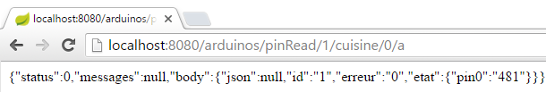
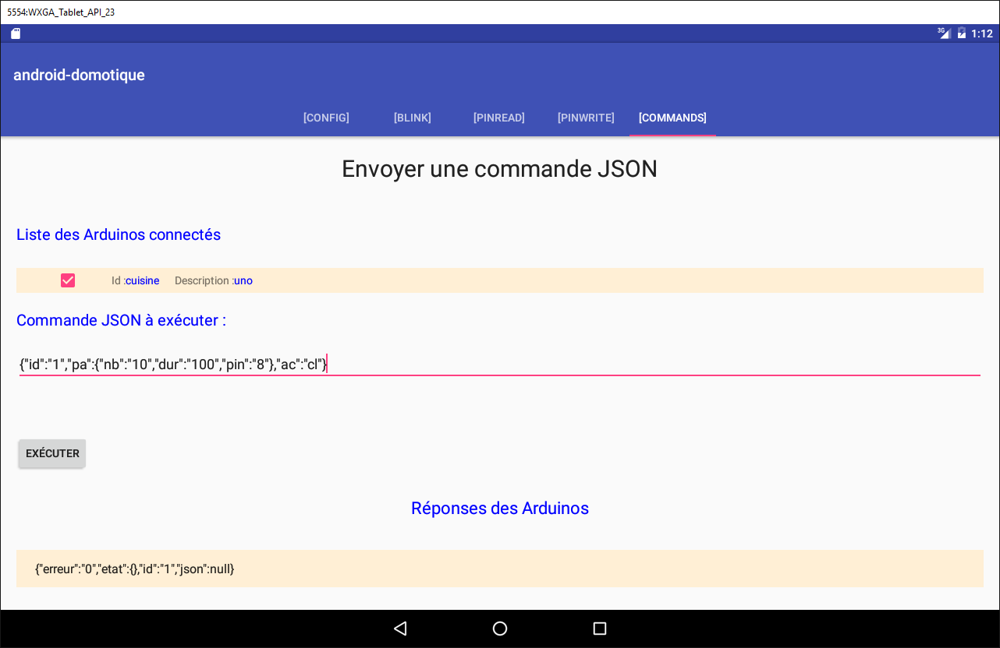
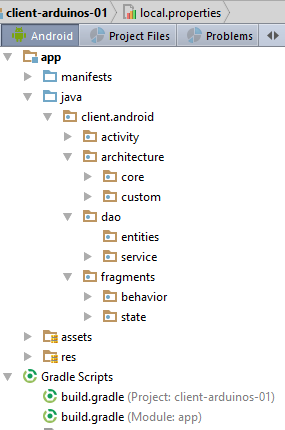
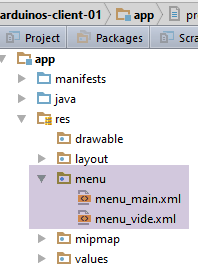
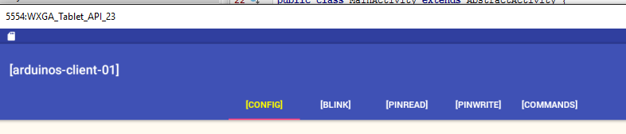
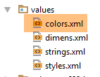
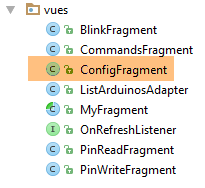
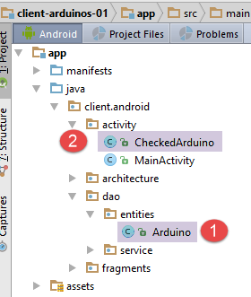

5. TP 2 - Arduino's aansturen met een Android-tablet
We gaan nu leren hoe je een Arduino-kaart met een tablet kunt aansturen. Het voorbeeld dat we volgen is dat van project [client-android-skel] uit de cursus (zie paragraaf 2).
5.1. Projectarchitectuur
Het gehele project krijgt de volgende architectuur:
 |
- het blok [1], de webserver / jSON en de Arduino’s worden u verstrekt;
- jullie moeten het blok [2] bouwen en de Android-tablet programmeren om te communiceren met de webserver / jSON.
5.2. De apparatuur
Je hebt de volgende onderdelen tot je beschikking:
- een Arduino met een Ethernet-uitbreiding, een led en een temperatuursensor;
- een miniHub om te delen met een andere student;
- een USB-kabel om de Arduino van stroom te voorzien;
- twee netwerkkabels om de Arduino en de PC op hetzelfde privénetwerk aan te sluiten;
- een Android-tablet;
5.2.1. De Arduino
 |
Zo sluit u de verschillende onderdelen op elkaar aan:
- verwijder de netwerkkabel uit je PC;
- verbind je PC en de Arduino met elkaar via een netwerkkabel;
- de Arduino die u ter beschikking heeft, is al geprogrammeerd. Het adres van de IP is [192.168.2.2]. Om ervoor te zorgen dat uw PC de Arduino kan herkennen, moet u hem het adres IP toewijzen op het netwerk [192.168.2]. De Arduino's zijn geprogrammeerd om te communiceren met een PC met het adres IP [192.168.2.1]. Ga als volgt te werk:
Ga naar [Panneau de configuration\Réseau et Internet\Centre Réseau et partage]:
 |
- in [1], klik op de link [réseau local];
- klik in [2] op de knop [Propriétés] van het lokale netwerk;
 |  |
- in [3], klik op de eigenschappen [IPv4] van de kaart [réseau local];
- in [4], geef deze kaart het adres IP [192.168.2.1] en het subnetmasker [255.255.255.0];
- in [5], klik zo vaak als nodig is op [OK] om de wizard te verlaten.
5.2.2. De tablet
- Verbind uw computer met behulp van uw wifi-sleutel met het wifi-netwerk dat u wordt aangegeven. Doe hetzelfde met uw tablet;
- Controleer het wifi-adres IP van uw PC door [ipconfig] in te voeren in een venster DOS. U zult een adres vinden dat er ongeveer zo uitziet: [192.168.x.y];
dos>ipconfig
Configuration IP de Windows
Carte réseau sans fil Wi-Fi :
Suffixe DNS propre à la connexion. . . :
Adresse IPv6 de liaison locale. . . . .: fe80::39aa:47f6:7537:f8e1%2
Adresse IPv4. . . . . . . . . . . . . .: 192.168.1.25
Masque de sous-réseau. . . . . . . . . : 255.255.255.0
Passerelle par défaut. . . . . . . . . : 192.168.1.1
- controleer het wifi-adres van uw tablet (IP). Vraag uw begeleider hoe u dit moet doen als u het niet weet. U zult een adres vinden dat er ongeveer zo uitziet: [192.168.x.z];
- schakel de firewall van je PC uit als deze actief is [Panneau de configuration\Système et sécurité\Pare-feu Windows];
- controleer in een DOS-venster of de PC en de tablet met elkaar kunnen communiceren door de opdracht [ping 192.168.x.z] in te voeren, waarbij [192.168.x.z] het adres IP van je tablet is. De tablet moet dan het volgende antwoorden:
dos>ping 192.168.1.26
Envoi d'une requête 'Ping' 192.168.1.26 avec 32 octets de données :
Réponse de 192.168.1.26 : octets=32 temps=102 ms TTL=64
Réponse de 192.168.1.26 : octets=32 temps=134 ms TTL=64
Réponse de 192.168.1.26 : octets=32 temps=168 ms TTL=64
Réponse de 192.168.1.26 : octets=32 temps=208 ms TTL=64
Statistiques Ping pour 192.168.1.26:
Paquets : envoyés = 4, reçus = 4, perdus = 0 (perte 0%),
Durée approximative des boucles en millisecondes :
Minimum = 102ms, Maximum = 208ms, Moyenne = 153ms
De netwerkconfiguratie van uw systeem is nu klaar.
5.2.3. De emulator [Genymotion]
De emulator [Genymotion] (zie paragraaf 6.9) is een uitstekend alternatief voor de tablet. Hij is bijna net zo snel en heeft geen wifi-netwerk nodig. Het wordt aanbevolen om deze methode te gebruiken. U kunt de tablet gebruiken voor de eindcontrole van uw applicatie.
5.3. Programmeren van Arduino's
Hier richten we ons op het schrijven van de C-code voor de Arduino's:
 |
Lees ook
- installatie van de Arduino-ontwikkelomgeving (zie paragraaf 6.1);
- gebruik van jSON-bibliotheken (bijlagen, paragraaf 6.6);
- in de Arduino-omgeving het voorbeeld van een server (bijvoorbeeld de webserver) en dat van een client (bijvoorbeeld de Telnet-client) testen;
- de bijlagen over de programmeeromgeving van Arduino's in paragraaf 6.1.
 |
Een Arduino bestaat uit een reeks pinnen die zijn aangesloten op hardware. Deze pinnen zijn ingangen of uitgangen. Hun waarde is binair of analoog. Om de Arduino aan te sturen, zijn er twee basisbewerkingen:
- een binaire/analoge waarde schrijven naar een pin die wordt aangeduid met zijn nummer;
- een binaire/analoge waarde uitlezen van een pin die wordt aangeduid met zijn nummer;
Aan deze twee basisbewerkingen voegen we een derde toe:
- een led gedurende een bepaalde tijd en met een bepaalde frequentie laten knipperen. Deze bewerking kan worden uitgevoerd door de twee voorgaande basisbewerkingen herhaaldelijk aan te roepen. Maar uit de tests zal blijken dat de communicatie tussen de [DAO]-laag en een Arduino in de orde van seconden plaatsvindt. Het is dan ook niet mogelijk om een led bijvoorbeeld elke 100 milliseconden te laten knipperen. Daarom zullen we deze knipperfunctie op de Arduino zelf implementeren.
De Arduino werkt als volgt:
- de communicatie tussen de [DAO]-laag en een Arduino verloopt via een TCP-IP-netwerk door middel van de uitwisseling van tekstregels in het jSON-formaat (JavaScript Object Notation);
- bij het opstarten maakt de Arduino verbinding met poort 100 van een registratieserver in de [DAO]-laag. Hij stuurt één enkele tekstregel naar de server:
Dit is een jSON-string die de Arduino identificeert die verbinding maakt:
- id: een identificatiecode van de Arduino;
- desc: een beschrijving van wat de Arduino kan. Hier hebben we simpelweg het type van de Arduino vermeld;
- mac: het MAC-adres van de Arduino;
- port: het poortnummer waarop de Arduino wacht op commando's van de [DAO]-laag.
Al deze gegevens zijn van het type tekenreeks, behalve de poort, die een geheel getal is.
- Zodra de Arduino zich bij de registratieserver heeft aangemeld, luistert hij af op de poort die hij aan de server heeft opgegeven (hierboven 102). Hij wacht op jSON-commando’s in de volgende vorm:
Dit is een tekenreeks jSON met de volgende elementen:
- id: een identificatiecode van het commando. Kan willekeurig zijn;
- ac: een actie. Er zijn er drie:
- pw (pin write) om een waarde naar een pin te schrijven,
- pr (pin read) om de waarde van een pin uit te lezen,
- cl (knipperen) om een led te laten knipperen;
- pa: de parameters van de actie. Deze zijn afhankelijk van de actie.
- De Arduino stuurt altijd een antwoord terug naar zijn client. Dit is een tekenreeks jSON met de volgende vorm:
waarbij
- id: de identificatiecode van het commando waarop wordt gereageerd;
- er (fout): een foutcode als er een fout is opgetreden, anders 0;
- en (status): een woordenboek dat altijd leeg is, behalve bij het leescommando pr. Het woordenboek bevat dan de waarde van de gevraagde pin nr. x.
Hier volgen enkele voorbeelden ter verduidelijking van de bovenstaande specificaties:
Laat led nr. 8 10 keer knipperen met een interval van 100 milliseconden:
Commando | |
Antwoord |
De parameters pa van het commando cl zijn: de duur dur in milliseconden van een knippering, het aantal nb knipperingen, het pin-nummer van de LED.
Schrijf de binaire waarde 1 naar pin nr. 7:
Commando | |
Antwoord |
De parameters pa van het commando pw zijn: de modus mod b (binair) of a (analoog) van het schrijven, de te schrijven waarde val, het pinnummer van de pin. Bij binair schrijven is val 0 of 1. Bij analoog schrijven ligt val in het bereik [0,255].
Schrijf de analoge waarde 120 naar pin nr. 2:
Commando | |
Antwoord |
De analoge waarde van pin 0 uitlezen:
Commando | |
Antwoord |
De parameters van het commando pr zijn: de leesmodus mod b (binair) of a (analoog), en het pin-nummer. Als er geen fout optreedt, zet de Arduino de waarde van de opgevraagde pin in het woord "et" van zijn antwoord. Hier geeft pin0 aan dat de waarde van pin nr. 0 is opgevraagd en 1023 is die waarde. Bij het uitlezen ligt een analoge waarde binnen het bereik [0, 1024].
We hebben de drie commando's cl, pw en pr besproken. Je kunt je afvragen waarom we geen duidelijkere velden hebben gebruikt in de strings jSON, zoals ‘action’ in plaats van ‘ac’, ‘pinwrite’ in plaats van ‘pw’, ‘parameters’ in plaats van ‘pa’, ... Een Arduino heeft namelijk zeer weinig geheugen. De jSON-strings die met de Arduino worden uitgewisseld, nemen echter geheugen in beslag. Daarom hebben we ervoor gekozen om deze zo kort mogelijk te houden.
Laten we nu eens kijken naar enkele voorbeelden van fouten:
Opdracht | |
Antwoord |
Er is een commando verzonden dat niet de indeling jSON heeft. De Arduino heeft foutcode 100 teruggestuurd.
Commando | |
Antwoord |
Er is een pr-commando verzonden waarbij de pin-parameter is vergeten. De Arduino heeft foutcode 302 teruggestuurd.
Commando | |
Antwoord |
We hebben een onbekend pinread-commando verzonden (namelijk pr). De Arduino heeft foutcode 104 teruggestuurd.
We gaan niet verder met de voorbeelden. De regel is simpel. De Arduino mag niet crashen, ongeacht het commando dat we ernaar sturen. Voordat een commando jSON wordt uitgevoerd, controleert hij of het correct is. Zodra er een fout optreedt, stopt de Arduino de uitvoering van het commando en stuurt hij de foutstring jSON terug naar de client. Ook hier geldt dat, vanwege de beperkte geheugenruimte, er een foutcode wordt teruggestuurd in plaats van een volledig foutbericht.
De programmacode die op de Arduino wordt uitgevoerd, vindt u in de voorbeelden in dit document:
 |
Om deze naar de Arduino over te zetten:
- sluit de Arduino aan op je PC;
 |  |
- in [1], open het bestand [arduino_uno.ino]. De Arduino IDE start op en laadt het bestand;
Opmerking: de code is oorspronkelijk gemaakt en getest met een IDE ARDUINO 1.5.x. Sindsdien zijn er andere versies van de IDE uitgebracht. De code werkte niet met een IDE ARDUINO 1.6.x. Het lijkt erop dat er een probleem is met de achterwaartse compatibiliteit tussen de versies 1.6 en 1.5.
- Geef in [2-4] het type Arduino aan dat wordt gebruikt;
 |  |
- geef in [5-7] aan op welke seriële poort van de PC deze zich bevindt;
- in [8]: upload (=laad) het programma [arduino_uno] naar de Arduino;
De programmacode bevat veel commentaar. Geïnteresseerde lezers kunnen deze raadplegen. We wijzen alleen op de regels in de code waarmee de bidirectionele client/server-communicatie tussen de Arduino en de PC kan worden geconfigureerd:
#include <SPI.h>
#include <Ethernet.h>
#include <ajSON.h>
// ---------------------------------- CONFIGURATION DE De ARDUINO UNO
// adres MAC van de Arduino UNO
byte macArduino[] = {
0x90, 0xA2, 0xDA, 0x0D, 0xEE, 0xC7 };
char * strMacArduino="90:A2:DA:0D:EE:C7";
// het adres IP van de Arduino
IPAddress ipArduino(192,168,2,2);
// zijn ID
char * idArduino="cuisine";
// poort van de Arduino-server
int portArduino=102;
// beschrijving van de Arduino
char * descriptionArduino="contrôle domotique";
// de Arduino-server werkt op poort 102
EthernetServer server(portArduino);
// IP van de registratieserver
IPAddress ipServeurEnregistrement(192,168,2,1);
// poort van de registratieserver
int portServeurEnregistrement=100;
// de Arduino-client van de registratieserver
EthernetClient clientArduino;
// het commando van de client
char commande[100];
// het antwoord van de Arduino
char message[100];
// initialisatie
void setup() {
// Met de seriële monitor kunt u de communicatie volgen
Serial.begin(9600);
// het opstarten van de Ethernet-verbinding
Ethernet.begin(macArduino,ipArduino);
// beschikbaar geheugen
Serial.print(F("Memoire disponible : "));
Serial.println(freeRam());
}
// oneindige lus
void loop()
{
...
}
- regel 8: het MAC-adres van de Arduino. Dit is hier niet zo belangrijk, omdat de Arduino zich in een privénetwerk bevindt waar zich een PC en een of meer Arduino's bevinden. Het Mac-adres moet binnen dit privénetwerk gewoon uniek zijn. Normaal gesproken zit er op de netwerkkaart van de Arduino een sticker waarop het Mac-adres van de kaart staat vermeld. Als deze sticker ontbreekt en u het Mac-adres van de kaart niet weet, kunt u op regel 8 invullen wat u wilt, zolang de regel dat het Mac-adres binnen het privénetwerk uniek moet zijn, maar wordt nageleefd;
- regel 11: het adres IP van de kaart. Ook hier kun je iets naar keuze invoeren, bijvoorbeeld [192.168.2.x], waarbij je x aanpast voor de verschillende Arduino's in het privé-netwerk;
- regel 13: de ID van de Arduino. Deze moet uniek zijn binnen de ID’s van de Arduino’s in hetzelfde privénetwerk;
- regel 15: de servicepoort van de Arduino. Je kunt hier invoeren wat je wilt;
- regel 17: de beschrijving van de functie van de Arduino. Je kunt hier alles invullen wat je wilt. Let op met lange tekenreeksen vanwege het beperkte geheugen van de Arduino;
- regel 21: het adres IP van de registratieserver van de Arduino op de PC. Mag niet worden gewijzigd;
- regel 23: poort van deze registratieservice. Mag niet worden gewijzigd;
5.4. De webserver / jSON
5.4.1. Installatie

Het Java-binaire bestand van de webserver / jSON wordt u verstrekt:
 |
Open een opdrachtvenster en voer de volgende opdracht in:
Als [java.exe] niet in de PATH van het opdrachtvenster staat, moet u het volledige pad naar [java.exe] invoeren (meestal C:\Program Files\java\...).
Er wordt een venster met de naam DOS geopend waarin logbestanden worden weergegeven:
. ____ _ __ _ _
/\\ / ___'_ __ _ _(_)_ __ __ _ \ \ \ \
( ( )\___ | '_ | '_| | '_ \/ _` | \ \ \ \
\\/ ___)| |_)| | | | | || (_| | ) ) ) )
' |____| .__|_| |_|_| |_\__, | / / / /
=========|_|==============|___/=/_/_/_/
:: Spring Boot :: (v0.5.0.M6)
2014-01-06 11:11:35.550 INFO 8408 --- [ main] arduino.rest.metier.Application : Starting Application on Gportpers3 with PID 8408 (C:\Users\SergeTahÚ\Desktop\part2\server.jar started by ST)
2014-01-06 11:11:35.587 INFO 8408 --- [ main] ationConfigEmbeddedWebApplicationContext : Refreshing org.springframework.boot.context.embedded.AnnotationConfigEmbeddedWebApplicationContext@6a4ba620: startup date [Mon Jan 06 11:11:35 CET 2014]; root of context hierarchy
2014-01-06 11:11:36.765 INFO 8408 --- [ main] o.apache.catalina.core.StandardService : Starting service Tomcat
2014-01-06 11:11:36.766 INFO 8408 --- [ main] org.apache.catalina.core.StandardEngine : Starting Servlet Engine: Apache Tomcat/7.0.42
2014-01-06 11:11:36.876 INFO 8408 --- [ost-startStop-1] o.a.c.c.C.[Tomcat].[localhost].[/] : Initializing Spring embedded WebApplicationContext
2014-01-06 11:11:36.877 INFO 8408 --- [ost-startStop-1] o.s.web.context.ContextLoader : Root WebApplicationContext: initialization completed in 1293 ms
2014-01-06 11:11:37.084 INFO 8408 --- [ost-startStop-1] o.a.c.c.C.[Tomcat].[localhost].[/] : Initializing Spring FrameworkServlet 'dispatcherServlet'
2014-01-06 11:11:37.084 INFO 8408 --- [ost-startStop-1] o.s.web.servlet.DispatcherServlet : FrameworkServlet 'dispatcherServlet': initialization started
2014-01-06 11:11:37.184 INFO 8408 --- [ost-startStop-1] o.s.w.s.handler.SimpleUrlHandlerMapping : Mapped URL path [/**/favicon.ico] onto handler of type [class org.springframework.web.servlet.resource.ResourceHttpRequestHandler]
2014-01-06 11:11:37.386 INFO 8408 --- [ost-startStop-1] s.w.s.m.m.a.RequestMappingHandlerMapping : Mapped "{[/arduinos/blink/{idCommande}/{idArduino}/{pin}/{duree}/{nombre}],methods=[GET],params=[],headers=[],consumes=[],produces=[],custom=[]}" onto public java.lang.String arduino.rest.metier.RestMetier.faireClignoterLed(java.lang.String,java.lang.String,java.lang.String,java.lang.String,java.lang.String,javax.servlet.http.HttpServletResponse)
2014-01-06 11:11:37.388 INFO 8408 --- [ost-startStop-1] s.w.s.m.m.a.RequestMappingHandlerMapping : Mapped "{[/arduinos/commands/{idArduino}],methods=[POST],params=[],headers=[],consumes=[],produces=[],custom=[]}" onto public java.lang.String arduino.rest.metier.RestMetier.sendCommandesJson(java.lang.String,java.lang.String,javax.servlet.http.HttpServletResponse)
2014-01-06 11:11:37.388 INFO 8408 --- [ost-startStop-1] s.w.s.m.m.a.RequestMappingHandlerMapping : Mapped "{[/arduinos/],methods=[GET],params=[],headers=[],consumes=[],produces=[],custom=[]}" onto public java.lang.String arduino.rest.metier.RestMetier.getArduinos(javax.servlet.http.HttpServletResponse)
2014-01-06 11:11:37.389 INFO 8408 --- [ost-startStop-1] s.w.s.m.m.a.RequestMappingHandlerMapping : Mapped "{[/arduinos/pinRead/{idCommande}/{idArduino}/{pin}/{mode}],methods=[GET],params=[],headers=[],consumes=[],produces=[],custom=[]}" onto public java.lang.String arduino.rest.metier.RestMetier.pinRead(java.lang.String,java.lang.String,java.lang.String,java.lang.String,javax.servlet.http.HttpServletResponse)
2014-01-06 11:11:37.390 INFO 8408 --- [ost-startStop-1] s.w.s.m.m.a.RequestMappingHandlerMapping : Mapped "{[/arduinos/pinWrite/{idCommande}/{idArduino}/{pin}/{mode}/{valeur}],methods=[GET],params=[],headers=[],consumes=[],produces=[],custom=[]}" onto public java.lang.String arduino.rest.metier.RestMetier.pinWrite(java.lang.String,java.lang.String,java.lang.String,java.lang.String,java.lang.String,javax.servlet.http.HttpServletResponse)
2014-01-06 11:11:37.463 INFO 8408 --- [ost-startStop-1] o.s.w.s.handler.SimpleUrlHandlerMapping : Mapped URL path [/**] naar handler van het type [class org.springframework.web.servlet.resource.ResourceHttpRequestHandler]
2014-01-06 11:11:37.464 INFO 8408 --- [ost-startStop-1] o.s.w.s.handler.SimpleUrlHandlerMapping : Mapped URL path [/webjars/**] onto handler van het type [class org.springframework.web.servlet.resource.ResourceHttpRequestHandler]
2014-01-06 11:11:37.881 INFO 8408 --- [ost-startStop-1] o.s.web.servlet.DispatcherServlet : FrameworkServlet 'dispatcherServlet': initialization completed in 796 ms
Serveur d'enregistrement lancÚ sur 192.168.2.1:100
2014-01-06 11:11:38.101 INFO 8408 --- [ Thread-4] arduino.dao.Recorder : Recorder : [11:11:38:101] : [Serveur d'enregistrement : attente d'un client]
2014-01-06 11:11:38.142 INFO 8408 --- [ main] arduino.rest.metier.Application : Started Application in 3.257 seconds
- regel 11: er wordt een ingebouwde Tomcat-server gestart;
- regel 15: de Spring-servlet [dispatcherServlet] van MVC wordt geladen en uitgevoerd;
- regel 18: de Rest-servlet URL ([/arduinos/blink/{idCommande}/{idArduino}/{pin}/{duree}/{nombre}]) wordt gedetecteerd;
- regel 19: de Rest-servlet URL ([/arduinos/commands/{idArduino}]) wordt gedetecteerd;
- regel 20: de URL Rest [/arduinos/] wordt gedetecteerd;
- regel 21: de URL Rest [/arduinos/pinRead/{idCommande}/{idArduino}/{pin}/{mode}] wordt gedetecteerd;
- regel 22: de URL Rest [/arduinos/pinWrite/{idCommande}/{idArduino}/{pin}/{mode}/{valeur}] wordt gedetecteerd;
- regel 26: de registratieserver voor de Arduino's wordt gestart;
Sluit je Arduino aan op de PC, als je dat nog niet hebt gedaan. De firewall van de PC moet zijn uitgeschakeld. Ga vervolgens met een browser naar de URL [http://localhost:8080/arduinos]:
 |
U zou nu de ID van de aangesloten Arduino moeten zien verschijnen. Als er niets te zien is, reset dan de Arduino. Hiervoor is er een drukknop voorzien.
De webserver / jSON is nu geïnstalleerd.
5.4.2. De URL die door de webservice / jSON worden weergegeven
Zie ook: project [Exemple-15] (zie paragraaf 1.16.1);
De webservice / jSON is geïmplementeerd met Spring MVC en stelt de volgende URL-endpunten beschikbaar:
@Controller
public class WebController {
// bedrijfslaag
@Autowired
private IMetier métier;
// lijst met Arduino's
@RequestMapping(value = "/arduinos", method = RequestMethod.GET, produces = MediaType.APPLICATION_JSON_VALUE)
@ResponseBody
public String getArduinos() throws JsonProcessingException {
...
}
// knipperen
@RequestMapping(value = "/arduinos/blink/{idCommande}/{idArduino}/{pin}/{duree}/{nombre}", method = RequestMethod.GET, produces = MediaType.APPLICATION_JSON_VALUE)
@ResponseBody
public String faireClignoterLed(@PathVariable("idCommande") String idCommande, @PathVariable("idArduino") String idArduino, @PathVariable("pin") int pin, @PathVariable("duree") int duree, @PathVariable("nombre") int nombre) throws JsonProcessingException {
...
}
// opdrachten verzenden JSON
@RequestMapping(value = "/arduinos/commands/{idArduino}", method = RequestMethod.POST, produces = MediaType.APPLICATION_JSON_VALUE, consumes = MediaType.APPLICATION_JSON_VALUE)
@ResponseBody
public String sendCommandesJson(@PathVariable("idArduino") String idArduino, HttpServletRequest request) throws IOException {
...
}
// pin uitlezen
@RequestMapping(value = "/arduinos/pinRead/{idCommande}/{idArduino}/{pin}/{mode}", method = RequestMethod.GET, produces = MediaType.APPLICATION_JSON_VALUE)
@ResponseBody
public String pinRead(@PathVariable("idCommande") String idCommande, @PathVariable("idArduino") String idArduino, @PathVariable("pin") int pin, @PathVariable("mode") String mode) throws JsonProcessingException {
....
}
// pin schrijven
@RequestMapping(value = "/arduinos/pinWrite/{idCommande}/{idArduino}/{pin}/{mode}/{valeur}", method = RequestMethod.GET, produces = MediaType.APPLICATION_JSON_VALUE)
@ResponseBody
public String pinWrite(@PathVariable("idCommande") String idCommande, @PathVariable("idArduino") String idArduino, @PathVariable("pin") int pin, @PathVariable("mode") String mode, @PathVariable("valeur") int valeur) throws JsonProcessingException {
...
}
}
De door de server verzonden antwoorden zijn jSON-representaties van de volgende klasse [Response<T>]:
package client.android.dao.service;
import java.util.List;
public class Response<T> {
// ----------------- eigenschappen
// status van de bewerking
private int status;
// eventuele statusberichten
private List<String> messages;
// de inhoud van het antwoord
private T body;
// constructors
public Response() {
}
public Response(int status, List<String> messages, T body) {
this.status = status;
this.messages = messages;
this.body = body;
}
// getters en setters
...
}
De URL [/arduinos] verstuurt een antwoord van het type [Response<List<Arduino>>], waarbij [Arduino] de volgende klasse is:
package android.arduinos.entities;
import java.io.Serializable;
public class Arduino implements Serializable {
// gegevens
private String id;
private String description;
private String mac;
private String ip;
private int port;
// getters en setters
...
}
- regel 7: [id] is de identificatiecode van de Arduino;
- regel 8: de beschrijving ervan;
- regel 9: het adres MAC;
- regel 10: het adres IP;
- regel 11: de poort waarop hij op commando's wacht;
De URL:
- [/arduinos/blink/{idCommande}/{idArduino}/{pin}/{duree}/{nombre}];
- [/arduinos/pinRead/{idCommande}/{idArduino}/{pin}/{mode}];
- [/arduinos/pinWrite/{idCommande}/{idArduino}/{pin}/{mode}/{valeur}];
- [/arduinos/commands/{idArduino}];
sturen een antwoord van het type [Response<ArduinoResponse>], waarbij de klasse [ArduinoResponse] het standaardantwoord van een Arduino vertegenwoordigt:
public class ArduinoResponse implements Serializable {
private String json;
private String id;
private String erreur;
private Map<String, Object> etat;
// getters en setters
...
}
- [json]: de string jSON die door een Arduino is verzonden en niet kon worden gedecodeerd (foutgeval), anders null;
- [id]: de ID van het commando waarop de Arduino reageert;
- [erreur]: een foutcode, 0 indien OK, anders een andere waarde;
- [etat]: een woordenboek met het specifieke antwoord op het commando. Dit is meestal leeg, tenzij het commando vroeg om het uitlezen van een waarde van de Arduino; in dat geval wordt deze waarde in dit woordenboek geplaatst;
5.4.3. Testen van de webservice / jSON
Raak vertrouwd met de webserver / jSON door de volgende URL te testen:
Hier zijn enkele schermafbeeldingen van wat u zou moeten zien:
De lijst met aangesloten Arduino's ophalen:
 |
De string jSON die je van de webserver hebt ontvangen / jSON is een object met de volgende velden:
- [status]: als deze 0 is, betekent dit dat er geen fout is opgetreden – anders is er een fout opgetreden;
- [messages]: een lijst met berichten die de fout toelichten als er een fout is opgetreden:
- [body]: de lijst met Arduino's als er geen fout is opgetreden. Elke Arduino wordt dan beschreven door een object met de volgende velden:
- [id]: identificatiecode van de Arduino. Twee Arduino's kunnen niet dezelfde identificatiecode hebben;
- [description]: korte beschrijving van de functionaliteit van de Arduino;
- [mac]: MAC-adres van de Arduino;
- [ip]: adres van de Arduino;
- [port]: poort waarop hij op commando’s wacht;
Laat de led op pin 8 van de Arduino met ID [cuisine] 20 keer knipperen met een interval van 100 ms:
 |
De string jSON die is ontvangen van de webserver / jSON is een object met de volgende velden:
- [status]: een waarde van 0 geeft aan dat er geen fout is opgetreden – anders is er een fout opgetreden;
- [messages]: een lijst met meldingen waarin de fout wordt uitgelegd als er een fout is opgetreden:
- [body]: het antwoord van de Arduino als er geen fout is opgetreden:
- [id]: de identificatiecode van het commando. Deze identificatiecode is de 1 in [/blink/1]. De Arduino neemt deze commando-identificatiecode over in zijn antwoord;
- [erreur]: een foutnummer. Een waarde anders dan 0 duidt op een fout;
- [etat]: wordt alleen gebruikt voor het uitlezen van een pin. Heeft dan als waarde de waarde van de pin;
- [json]: wordt alleen gebruikt in geval van een fout jSON tussen de client en de server. De waarde is dan de foutieve tekenreeks jSON die door de Arduino is verzonden;
Analoge uitlezing van pin nr. 0 van de Arduino, geïdentificeerd door [cuisine]:
 |
De tekenreeks jSON, ontvangen van de webserver / jSON, is analoog aan de vorige, met als enige verschil het veld [etat], dat de waarde van pin nr. 0 weergeeft.
Binaire uitlezing van pin nr. 5 van de Arduino, geïdentificeerd door [cuisine]:
 |
De string jSON, ontvangen van de webserver / jSON, is vergelijkbaar met de vorige.
Binaire schrijfbewerking van de waarde 1 op pin nr. 8 van de Arduino met identificatiecode [cuisine]:
 |
De string jSON ontvangen van de webserver / jSON is vergelijkbaar met de vorige.
De test van URL [http://localhost:8080/arduinos/commands/cuisine] is wat lastiger. De methode van de webserver / jSON die deze URL verwerkt, verwacht een verzoek POST dat niet eenvoudig met een browser kan worden gesimuleerd. Om deze URL te testen, kun je een Chrome-browser gebruiken met de extensie [Advanced REST Client] (zie paragraaf 6.13):
 |
- in [1], de URL van de te testen webmethode / jSON;
- in [2], de methode POST om het verzoek te verzenden;
- in [3-4] is de verzonden waarde die van jSON;
- in [5] is de verzonden tekenreeks jSON. Let goed op de haakjes waarmee de lijst begint en eindigt. Hier staat in de lijst slechts één commando, jSON, dat pin nr. 8 10 keer per 100 ms laat knipperen;
- in [6] wordt het verzoek verzonden;
 |
- in [7] wordt het antwoord jSON verzonden door de server. Het object heeft een object ontvangen met de twee gebruikelijke velden [status, messages] en een veld [body] waarvan de waarde de lijst is met antwoorden van de Arduino op elk van de verzonden jSON-commando's.
Laten we eens kijken wat er gebeurt als we een jSON-commando verzenden dat syntactisch onjuist is voor de Arduino:
 |
We ontvangen dan het volgende antwoord:
 |
We zien dat in het antwoord van de Arduino het foutnummer [104] is, wat aangeeft dat het commando [xx] niet is herkend.
5.5. Tests van de Android-client
 |
Hieronder vindt u het uitvoerbare bestand van de voltooide Android-client:
|
Sleep het bovenstaande uitvoerbare bestand [app-debug.apk] met de muis naar een tabletemulator [GenyMotion]. Het wordt dan opgeslagen en vervolgens uitgevoerd. Start ook de webserver / jSON als u dat nog niet hebt gedaan. Sluit de Arduino aan op de PC met een led erop. Met de Android-client kunt u de Arduinos op afstand beheren. De client toont de gebruiker de volgende schermen.
Via het tabblad [CONFIG] kun je verbinding maken met de server en de lijst met aangesloten Arduino’s ophalen:

- Voer in [1] het adres IP [192.168.2.1] in dat aan uw PC is toegewezen (zie paragraaf 5.2).
Via het tabblad [PINWRITE] kunt u een waarde naar een pin van een Arduino schrijven:


Via het tabblad [PINREAD] kunt u de waarde van een pin van een Arduino uitlezen:

Met het tabblad [BLINK] kun je een LED op een Arduino laten knipperen:

Via het tabblad [COMMAND] kun je een commando jSON naar een Arduino sturen:

5.6. De Android-client van de webservice / jSON
We gaan nu verder met het schrijven van de Android-client.
5.6.1. De architectuur van de client
De architectuur van de Android-client zal dezelfde zijn als die van het project [Exemple-15] (zie paragraaf 1.16.2);
 |
- de laag [DAO] communiceert met de webserver / jSON;
De Android-client moet meerdere Arduino's tegelijkertijd kunnen aansturen. We willen bijvoorbeeld twee leds op twee Arduino's tegelijkertijd laten knipperen, en niet de ene na de andere. Daarom zal onze Android-client per Arduino een asynchrone taak gebruiken en zullen deze taken parallel worden uitgevoerd.
5.6.2. Het Android Studio-project van de client
Kopieer het project [client-android-skel] (zie paragraaf 2) naar het project [client-arduinos-01] (raadpleeg indien nodig paragraaf 1.15 voor uitleg over het kopiëren van een Gradle-project):

5.6.3. De vijf weergaven XML
 |
Er zullen vijf weergaven zijn XML:
- [blink]: om een led van een Arduino te laten knipperen. Deze is gekoppeld aan het fragment [BlinkFragment];
- [commands]: om een commando jSON naar een Arduino te sturen. Dit is gekoppeld aan het fragment [CommandsFragment];
- [config]: om de URL van de webservice / jSON te configureren en de initiële lijst met aangesloten Arduino's op te halen. Dit is gekoppeld aan het fragment [ConfigFragment];
- [pinread]: om de binaire of analoge waarde van een pin van een Arduino uit te lezen. Dit is gekoppeld aan het fragment [PinReadFragment];
- [pinwrite]: om een binaire of analoge waarde naar een pin van een Arduino te schrijven. Dit fragment is gekoppeld aan het fragment [PinWriteFragment];
Op dit moment hebben deze vijf weergaven XML allemaal dezelfde lege inhoud:
<?xml version="1.0" encoding="utf-8"?>
<ScrollView xmlns:android="http://schemas.android.com/apk/res/android"
android:id="@+id/scrollView1"
android:layout_width="wrap_content"
android:layout_height="wrap_content">
<RelativeLayout xmlns:android="http://schemas.android.com/apk/res/android"
android:layout_width="match_parent"
android:layout_height="match_parent">
</RelativeLayout>
</ScrollView>
- de weergave bevindt zich in een container [RelativeLayout] (regels 7-10), die op zijn beurt is opgenomen in een container [ScrollView] (regels 2-11). Dit zorgt ervoor dat we door de weergave kunnen ‘scrollen’ als deze groter is dan het scherm van een tablet;
Opdracht: maak de vijf weergaven XML aan.
5.6.4. Het fragmentenmenu
We weten dat de fragmenten van een project dat is gebouwd met [client-android-skel] gekoppeld moeten zijn aan een menu, zelfs als dat leeg is. In dit geval heeft de applicatie geen menu. Het lege menu is al in het project aanwezig;
 |
5.6.5. De vijf fragmenten van de applicatie
 |  |
Taak: kopieer het fragment [DummyFragment] naar de vijf fragmenten van de applicatie, zoals weergegeven in [2].
Het fragment [ConfigFragment] heeft de volgende structuur:
package client.android.fragments.behavior;
import client.android.R;
import client.android.architecture.core.AbstractFragment;
import client.android.architecture.custom.CoreState;
import client.android.fragments.state.DummyFragmentState;
import org.androidannotations.annotations.EFragment;
import org.androidannotations.annotations.OptionsMenu;
@EFragment
@OptionsMenu(R.menu.menu_vide)
public class ConfigFragment extends AbstractFragment {
// velden overgenomen van de bovenliggende klasse -------------------------------------------------------
...
Vervang regel 10 door de volgende regel:
@EFragment(R.layout.config)
Opdracht: doe hetzelfde voor de vier andere fragmenten door het attribuut [@EFragment] van de klasse aan te passen.
Fragment | Weergave |
ConfigFragment | |
PinReadFragment | |
PinWriteFragment | |
CommandsFragment | |
BlinkFragment | |
5.6.6. De statussen van de fragmenten
 |  |
Elk fragment krijgt een status.
Opdracht: dupliceer de klasse [DummyFragmentState] vijf keer om de vijf statussen te maken die worden weergegeven in [2].
5.6.7. Het project aanpassen
 |
Het pakket [architecture / custom] bevat de aanpasbare elementen van de applicatiearchitectuur.
5.6.7.1. De interface [IMainActivity]
De interface [IMainActivity] definieert wat de fragmenten van de activiteit kunnen opvragen, evenals de constanten van de applicatie. Deze interface ziet er als volgt uit:
package client.android.architecture.custom;
import client.android.architecture.core.ISession;
import client.android.dao.service.IDao;
public interface IMainActivity extends IDao {
// toegang tot de sessie
ISession getSession();
// van weergave wisselen
void navigateToView(int position, ISession.Action action);
// afhandeling van wachtrijen
void beginWaiting();
void cancelWaiting();
// applicatieconstanten -------------------------------------
// debugmodus
boolean IS_DEBUG_ENABLED = true;
// maximale wachttijd voor het antwoord van de server
int TIMEOUT = 1000;
// wachttijd voordat de clientverzoek wordt uitgevoerd
int DELAY = 000;
// basisauthenticatie
boolean IS_BASIC_AUTHENTIFICATION_NEEDED = false;
// aaneenschakeling van fragmenten
int OFF_SCREEN_PAGE_LIMIT = 1;
// tabbladbalk
boolean ARE_TABS_NEEDED = true;
// laadafbeelding
boolean IS_WAITING_ICON_NEEDED = true;
// aantal fragmenten
int FRAGMENTS_COUNT = 5;
// aantal weergaven
int VUE_CONFIG = 0;
int VUE_BLINK = 1;
int VUE_PINREAD = 2;
int VUE_PINWRITE = 3;
int VUE_COMMANDS = 4;
}
- regels 25, 28, 31, 40: configuratie van de laag [DAO]. Deze applicatie doet een verzoek aan een webserver / jSON;
- regel 37: deze applicatie heeft tabbladen;
- regel 43: deze applicatie heeft vijf fragmenten;
- regels 46-50: de nummers van de vijf fragmenten;
- regel 34: aangrenzende fragmenten. De ontwikkelaar kan hier een waarde invoeren binnen het bereik [1, FRAGMENTS_COUNT-1];
5.6.7.2. De klasse [CoreState]
De klasse [CoreState] is de bovenliggende klasse van de statussen van de fragmenten:
package client.android.architecture.custom;
import client.android.architecture.core.MenuItemState;
import client.android.fragments.state.*;
import com.fasterxml.jackson.annotation.JsonIgnoreProperties;
import com.fasterxml.jackson.annotation.JsonSubTypes;
import com.fasterxml.jackson.annotation.JsonTypeInfo;
@JsonIgnoreProperties(ignoreUnknown = true)
@JsonTypeInfo(use = JsonTypeInfo.Id.NAME, include = JsonTypeInfo.As.PROPERTY)
@JsonSubTypes({
@JsonSubTypes.Type(value = ConfigFragmentState.class),
@JsonSubTypes.Type(value = BlinkFragmentState.class),
@JsonSubTypes.Type(value = PinReadFragmentState.class),
@JsonSubTypes.Type(value = PinWriteFragmentState.class),
@JsonSubTypes.Type(value = CommandsFragmentState.class)}
)
public class CoreState {
// fragment bezocht of niet
protected boolean hasBeenVisited = false;
// status van het eventuele menu van het fragment
protected MenuItemState[] menuOptionsState;
// getters en setters
...
}
- regels 12-16: hier moeten de klassen van de statussen van de vijf fragmenten worden gedeclareerd;
5.6.8. De klasse [MainActivity]
 |
De klasse [MainActivity] ziet er als volgt uit:
package client.android.activity;
import android.support.design.widget.TabLayout;
import android.util.Log;
import client.android.R;
import client.android.architecture.core.AbstractActivity;
import client.android.architecture.core.AbstractFragment;
import client.android.architecture.core.ISession;
import client.android.architecture.custom.IMainActivity;
import client.android.architecture.custom.Session;
import client.android.dao.entities.Arduino;
import client.android.dao.entities.ArduinoCommand;
import client.android.dao.entities.ArduinoResponse;
import client.android.dao.service.Dao;
import client.android.dao.service.IDao;
import client.android.dao.service.Response;
import client.android.fragments.behavior.*;
import org.androidannotations.annotations.Bean;
import org.androidannotations.annotations.EActivity;
import org.androidannotations.annotations.OptionsMenu;
import rx.Observable;
import java.util.List;
import java.util.Locale;
@EActivity
@OptionsMenu(R.menu.menu_main)
public class MainActivity extends AbstractActivity {
// laag [DAO]
@Bean(Dao.class)
protected IDao dao;
// sessie
private Session session;
// methoden van de bovenliggende klasse -----------------------
@Override
protected void onCreateActivity() {
// log
if (IS_DEBUG_ENABLED) {
Log.d(className, "onCreateActivity");
}
// sessie
this.session = (Session) super.session;
// aanmaken van de vijf tabbladen
for (int i = 0; i < 5; i++) {
TabLayout.Tab newTab = tabLayout.newTab();
newTab.setText(getFragmentTitle(i));
tabLayout.addTab(newTab);
}
}
@Override
protected IDao getDao() {
return dao;
}
@Override
protected AbstractFragment[] getFragments() {
return new AbstractFragment[]{new ConfigFragment_(), new BlinkFragment_(), new PinReadFragment_(), new PinWriteFragment_(), new CommandsFragment_()};
}
@Override
protected CharSequence getFragmentTitle(int position) {
Locale l = Locale.getDefault();
switch (position) {
case 0:
return getString(R.string.config_titre).toUpperCase(l);
case 1:
return getString(R.string.blink_titre).toUpperCase(l);
case 2:
return getString(R.string.pinread_titre).toUpperCase(l);
case 3:
return getString(R.string.pinwrite_titre).toUpperCase(l);
case 4:
return getString(R.string.commands_titre).toUpperCase(l);
}
return null;
}
@Override
protected void navigateOnTabSelected(int position) {
// het fragment met positie nr. wordt weergegeven
navigateToView(position, ISession.Action.NAVIGATION);
}
@Override
protected int getFirstView() {
return IMainActivity.VUE_CONFIG;
}
// implementatie IDao -----------------------------------------
}
- regels 46-50: aanmaken van de vijf tabbladen van de applicatie;
- regel 48: de titels van de tabbladen worden geleverd door de methode in de regels 63-79;
- de vijf fragmenten worden geïnstantieerd in regel 60. Vanwege de annotaties AA zijn de klassen van de fragmenten dezelfde als eerder weergegeven, met een underscore als achtervoegsel;
- regels 63-79: er wordt een titel gedefinieerd voor elk van de fragmenten. Deze titels worden opgezocht in het bestand [res / values / strings.xml]
 |
De inhoud van [strings.xml] is als volgt:
<?xml version="1.0" encoding="utf-8"?>
<resources>
<!-- naam van de applicatie -->
<string name="app_name">[arduinos-client-01]</string>
<!-- Fragmenten en tabbladen -->
<string name="config_titre">[Config]</string>
<string name="blink_titre">[Blink]</string>
<string name="pinread_titre">[PinRead]</string>
<string name="pinwrite_titre">[PinWrite]</string>
<string name="commands_titre">[Commands]</string>
</resources>
Opdracht: maak de bovenstaande elementen aan en compileer het project. Er mogen geen fouten zijn.
Voer het project uit. Je zou het volgende scherm moeten zien op de emulator:

Bekijk de logbestanden die bij de weergave van het eerste scherm zijn gegenereerd en volg de verschillende uitgevoerde stappen. Schakel tussen de tabbladen en blijf de logbestanden volgen.
5.6.9. Het scherm XML [config]
De weergave XML [config] ziet er als volgt uit:
 |  |
De bovenstaande weergave wordt verkregen met de volgende code XML:
<?xml version="1.0" encoding="utf-8"?>
<ScrollView xmlns:android="http://schemas.android.com/apk/res/android"
android:id="@+id/scrollView1"
android:layout_width="wrap_content"
android:layout_height="wrap_content">
<RelativeLayout
android:layout_width="match_parent"
android:layout_height="match_parent">
<TextView
android:id="@+id/txt_TitreConfig"
android:layout_width="wrap_content"
android:layout_height="wrap_content"
android:layout_alignParentTop="true"
android:layout_centerHorizontal="true"
android:layout_marginTop="150dp"
android:text="@string/txt_TitreConfig"
android:textSize="@dimen/titre"/>
<TextView
android:id="@+id/txt_UrlServiceRest"
android:layout_width="wrap_content"
android:layout_height="wrap_content"
android:layout_alignParentLeft="true"
android:layout_below="@+id/txt_TitreConfig"
android:layout_marginTop="50dp"
android:text="@string/txt_UrlServiceRest"
android:textSize="20sp"/>
<EditText
android:id="@+id/edt_UrlServiceRest"
android:layout_width="300dp"
android:layout_height="wrap_content"
android:layout_alignBaseline="@+id/txt_UrlServiceRest"
android:layout_alignBottom="@+id/txt_UrlServiceRest"
android:layout_marginLeft="20dp"
android:layout_toRightOf="@+id/txt_UrlServiceRest"
android:ems="10"
android:hint="@string/hint_UrlServiceRest"
android:inputType="textUri">
<requestFocus/>
</EditText>
<TextView
android:id="@+id/txt_MsgErreurIpPort"
android:layout_width="wrap_content"
android:layout_height="wrap_content"
android:layout_alignParentLeft="true"
android:layout_below="@+id/txt_UrlServiceRest"
android:layout_marginTop="20dp"
android:text="@string/txt_MsgErreurUrlServiceRest"
android:textColor="@color/red"
android:textSize="20sp"/>
<TextView
android:id="@+id/txt_arduinos"
android:layout_width="wrap_content"
android:layout_height="wrap_content"
android:layout_alignParentLeft="true"
android:layout_below="@+id/txt_MsgErreurIpPort"
android:layout_marginTop="40dp"
android:text="@string/titre_list_arduinos"
android:textColor="@color/blue"
android:textSize="20sp"/>
<Button
android:id="@+id/btn_Rafraichir"
android:layout_width="wrap_content"
android:layout_height="wrap_content"
android:layout_alignBaseline="@+id/txt_arduinos"
android:layout_alignBottom="@+id/txt_arduinos"
android:layout_marginLeft="20dp"
android:layout_toRightOf="@+id/txt_arduinos"
android:text="@string/btn_rafraichir"/>
<Button
android:id="@+id/btn_Annuler"
android:layout_width="wrap_content"
android:layout_height="wrap_content"
android:layout_alignBaseline="@+id/txt_arduinos"
android:layout_alignBottom="@+id/txt_arduinos"
android:layout_marginLeft="20dp"
android:layout_toRightOf="@+id/txt_arduinos"
android:text="@string/btn_annuler"
android:visibility="invisible"/>
<ListView
android:id="@+id/ListViewArduinos"
android:layout_width="match_parent"
android:layout_height="200dp"
android:layout_alignParentLeft="true"
android:layout_below="@+id/txt_arduinos"
android:layout_marginTop="30dp"
android:background="@color/wheat">
</ListView>
</RelativeLayout>
</ScrollView>
De weergave maakt gebruik van tekenreeksen (android:text op de regels 15, 25, 37, 50, 61, 73) die zijn gedefinieerd in het bestand [res / values / strings]:
 |
<?xml version="1.0" encoding="utf-8"?>
<resources>
<string name="app_name">android-domotique</string>
<!-- Fragmenten en tabbladen -->
<string name="config_titre">[Config]</string>
<string name="blink_titre">[Blink]</string>
<string name="pinread_titre">[PinRead]</string>
<string name="pinwrite_titre">[PinWrite]</string>
<string name="commands_titre">[Commands]</string>
<!-- Configuratie -->
<string name="txt_TitreConfig">Se connecter au serveur</string>
<string name="txt_UrlServiceRest">Url du service web / jSON</string>
<string name="txt_MsgErreurUrlServiceRest">L\'Url du service doit être entrée sous la forme Ip1.Ip2.Ip3.IP4:Port/contexte</string>
<string name="hint_UrlServiceRest">ex (192.168.1.120:8080/rest)</string>
<string name="btn_annuler">Annuler</string>
<string name="btn_rafraichir">Rafraîchir</string>
<string name="titre_list_arduinos">Liste des Arduinos connectés</string>
</resources>
De weergave maakt gebruik van kleuren (android:textColor op de regels 51 en 62) die zijn gedefinieerd in het bestand [res / values / colors]:
 |
<?xml version="1.0" encoding="utf-8"?>
<resources>
<color name="colorPrimary">#3F51B5</color>
<color name="colorPrimaryDark">#303F9F</color>
<color name="colorAccent">#FF4081</color>
<color name="floral_white">#FFFAF0</color>
<!-- app -->
<color name="red">#FF0000</color>
<color name="blue">#0000FF</color>
<color name="wheat">#FFEFD5</color>
</resources>
De weergave maakt gebruik van afmetingen (android:textSize op regel 16) die zijn gedefinieerd in het bestand [res / values / dimens]:
 |
<resources>
<!-- Standaard schermmarges, volgens de Android-ontwerprichtlijnen. -->
<dimen name="activity_horizontal_margin">16dp</dimen>
<dimen name="activity_vertical_margin">16dp</dimen>
<dimen name="fab_margin">16dp</dimen>
<dimen name="appbar_padding_top">8dp</dimen>
<!-- app -->
<dimen name="titre">30dp</dimen>
</resources>
Deze techniek is niet voor alle afmetingen gebruikt. Het is echter wel de aanbevolen methode. Hiermee kunnen afmetingen op één plek worden gewijzigd.
Opdracht: maak de bovenstaande elementen aan.
Voer je project opnieuw uit. Je zou het volgende scherm moeten zien:

5.6.10. Het fragment [ConfigFragment]
 |
Om de nieuwe weergave [config] te verwerken, wordt de code van het fragment [ConfigFragment] als volgt aangepast:
package client.android.fragments.behavior;
import android.view.View;
import android.widget.Button;
import android.widget.EditText;
import android.widget.ListView;
import android.widget.TextView;
import client.android.R;
import client.android.architecture.core.AbstractFragment;
import client.android.architecture.custom.CoreState;
import client.android.architecture.custom.IMainActivity;
import client.android.fragments.state.ConfigFragmentState;
import org.androidannotations.annotations.Click;
import org.androidannotations.annotations.EFragment;
import org.androidannotations.annotations.OptionsMenu;
import org.androidannotations.annotations.ViewById;
@EFragment(R.layout.config)
@OptionsMenu(R.menu.menu_vide)
public class ConfigFragment extends AbstractFragment {
// elementen van de visuele interface
@ViewById(R.id.btn_Rafraichir)
protected Button btnRafraichir;
@ViewById(R.id.btn_Annuler)
protected Button btnAnnuler;
@ViewById(R.id.edt_UrlServiceRest)
protected EditText edtUrlServiceRest;
@ViewById(R.id.txt_MsgErreurIpPort)
protected TextView txtMsgErreurUrlServiceRest;
@ViewById(R.id.ListViewArduinos)
protected ListView listArduinos;
@Click(R.id.btn_Rafraichir)
protected void doRafraichir() {
}
// Beheer van de levenscyclus van het fragment -------------------------------------
@Override
public CoreState saveFragment() {
return new ConfigFragmentState();
}
@Override
protected int getNumView() {
return IMainActivity.VUE_CONFIG;
}
@Override
protected void initFragment(CoreState previousState) {
}
@Override
protected void initView(CoreState previousState) {
// Eerste bezoek?
if(previousState==null){
txtMsgErreurUrlServiceRest.setVisibility(View.INVISIBLE);
}
}
@Override
protected void updateOnSubmit(CoreState previousState) {
}
@Override
protected void updateOnRestore(CoreState previousState) {
}
@Override
protected void notifyEndOfUpdates() {
// knoppen
initButtons();
}
@Override
protected void notifyEndOfTasks(boolean runningTasksHaveBeenCanceled) {
}
// privé-methoden --------------------------------------------
private void initButtons() {
// de knop [Exécuter] vervangt de knop [Annuler]
btnAnnuler.setVisibility(View.INVISIBLE);
btnRafraichir.setVisibility(View.VISIBLE);
}
}
- regels 23-32: de elementen van de visuele interface;
- regels 58-60: bij het eerste bezoek aan het fragment wordt de foutmelding verborgen;
- regels 73-76: telkens wanneer het fragment wordt weergegeven, wordt de knop [Annuler] verborgen (regel 82) en wordt de knop [Rafraîchir] weergegeven (regels 86-87). In deze applicatie kan een fragment namelijk niet worden weergegeven terwijl er een asynchrone bewerking gaande is en de knop [Annuler] dus zichtbaar is;
Opdracht: maak de bovenstaande elementen aan.
Voer deze nieuwe versie uit. Het eerste scherm moet er nu als volgt uitzien:

5.6.10.1. De knop [Rafraîchir]
We gaan voorlopig de klik op de knop [Rafraîchir] als volgt afhandelen:
@Click(R.id.btn_Rafraichir)
protected void doRafraichir() {
// we starten een taak – we bereiden het wachten voor
beginWaiting(1);
}
@Click(R.id.btn_Annuler)
protected void doAnnuler() {
if (isDebugEnabled) {
Log.d(className, "Annulation demandée");
}
// de asynchrone taken worden geannuleerd
cancelRunningTasks();
}
protected void beginWaiting(int numberOfRunningTasks) {
// we bereiden het wachten op taken voor
beginRunningTasks(numberOfRunningTasks);
// de knop [Annuler] vervangt de knop [Rafraîchir]
btnRafraichir.setVisibility(View.INVISIBLE);
btnAnnuler.setVisibility(View.VISIBLE);
}
// beheer van de levenscyclus van het fragment -------------------------------------
...
@Override
protected void notifyEndOfTasks(boolean runningTasksHaveBeenCanceled) {
// knoppen in hun oorspronkelijke toestand
initButtons();
}
// privé-methoden --------------------------------------------
private void initButtons() {
// de knop [Exécuter] vervangt de knop [Annuler]
btnAnnuler.setVisibility(View.INVISIBLE);
btnRafraichir.setVisibility(View.VISIBLE);
}
- regels 1-5: de methode die wordt uitgevoerd bij een klik op de knop [Rafraîchir];
- regel 4: we beginnen met wachten;
- regel 18: we geven het aantal asynchrone taken dat we gaan starten door aan de bovenliggende klasse. De wachtafbeelding verschijnt;
- regels 20-21: deze wachttijd leidt ertoe dat de knop [Annuler] verschijnt, de knop [Rafraîchir] verdwijnt en de wachtafbeelding verschijnt. Er gebeurt verder niets. De gebruiker kan echter op de knop [Annuler] klikken. De methode in de regels 7-14 wordt dan uitgevoerd;
- regel 13: de bovenliggende klasse wordt gevraagd alle taken te annuleren. De klasse voert dit uit en roept vervolgens de methode in de regels 25-29 aan om aan te geven dat alle taken zijn voltooid. De parameter [runningTasksHaveBeenCanceled] krijgt de waarde true om aan te geven dat de taken zijn geannuleerd;
- regels 35-36: de knop [Annuler] verdwijnt, terwijl de knop [Rafraîchir] weer verschijnt.
Opdracht: Breng deze wijzigingen aan en voer vervolgens het project uit. Controleer of de knop [Rafraîchir] de wachtrij start en of de knop [Annuler] deze stopt. Bekijk de logbestanden.
5.6.10.2. Controle van de invoer
In de vorige versie controleerden we de geldigheid van de invoer niet. Om dit te controleren, voegen we de volgende code toe in [ConfigFragment]:
// de ingevoerde waarden
private String urlServiceRest;
@Click(R.id.btn_Rafraichir)
protected void doRafraichir() {
// de invoer wordt gecontroleerd
if (!pageValid()) {
return;
}
// er wordt een taak gestart – de wachttijd wordt voorbereid
beginWaiting(1);
}
// controle van de invoer
private boolean pageValid() {
// in eerste instantie geen foutmelding
txtMsgErreurUrlServiceRest.setVisibility(View.INVISIBLE);
// het IP-adres en de poort van de server worden opgehaald
urlServiceRest = String.format("http://%s", edtUrlServiceRest.getText().toString().trim());
// de geldigheid wordt gecontroleerd
try {
URI uri = new URI(urlServiceRest);
String host = uri.getHost();
int port = uri.getPort();
if (host == null || port == -1) {
throw new Exception();
}
} catch (Exception ex) {
// foutmelding weergeven
txtMsgErreurUrlServiceRest.setVisibility(View.VISIBLE);
// terug naar UI
return false;
}
// alles in orde
return true;
}
- regel 2: de ingevoerde URL;
- regels 7-9: voordat we iets doen, controleren we de geldigheid van de invoer;
- regel 19: we halen de ingevoerde URL op en voegen er het voorvoegsel [http://] aan toe;
- regel 22: er wordt geprobeerd om hiermee een URI-object (Uniform Resource Identifier) te construeren. Als de ingevoerde URL syntactisch onjuist is, treedt er een uitzondering op;
- regels 23-27: er wordt een uitzondering gegenereerd als de URI correct is, maar er ook [host==null] en [port==-1] aanwezig zijn. Dit is een mogelijk geval;
- regel 30: er is een uitzondering opgetreden. De foutmelding wordt weergegeven;
- regel 32: we retourneren [false] om aan te geven dat de pagina ongeldig is;
- regel 35: er zijn geen fouten opgetreden. We retourneren [true] om aan te geven dat de pagina geldig is;
Opdracht: maak de bovenstaande elementen aan.
Test deze nieuwe versie en controleer of de ongeldige URL-codes correct worden gemeld.
5.6.10.3. De lijst met Arduino's weergeven
 |
De verschillende weergaven moeten de lijst met aangesloten Arduino's weergeven. Hiervoor gaan we verschillende klassen definiëren en een weergave XML:
- een Arduino wordt vertegenwoordigd door de klasse [Arduino] [1];
- de klasse [CheckedArduino] [1] is afgeleid van de klasse [Arduino], waaraan een booleaanse variabele is toegevoegd om aan te geven of de Arduino al dan niet in een lijst is geselecteerd;
De klasse [Arduino] is de klasse die al door de server wordt gebruikt en die in paragraaf 5.4.2 wordt beschreven. Deze luidt als volgt:
package android.arduinos.entities;
import java.io.Serializable;
public class Arduino implements Serializable {
// gegevens
private String id;
private String description;
private String mac;
private String ip;
private int port;
// getters en setters
...
}
- regel 7: [id] is de identificatiecode van de Arduino;
- regel 8: de beschrijving ervan;
- regel 9: het adres MAC;
- regel 10: het adres IP;
- regel 11: de poort waarop hij op commando's wacht;
Deze klasse komt overeen met de tekenreeks jSON die van de server wordt ontvangen wanneer deze om de lijst met aangesloten Arduino's wordt gevraagd:
|
De klasse [CheckedArduino] is afgeleid van de klasse [Arduino]:
package android.arduinos.entities;
public class CheckedArduino extends Arduino {
private static final long serialVersionUID = 1L;
// een Arduino kan worden geselecteerd
private boolean isChecked;
// constructor
public CheckedArduino(Arduino arduino, boolean isChecked) {
// ouder
super(arduino.getId(), arduino.getDescription(), arduino.getMac(), arduino.getIp(), arduino.getPort());
// lokaal
this.isChecked = isChecked;
}
// getters en setters
public boolean isChecked() {
return isChecked;
}
public void setChecked(boolean isChecked) {
this.isChecked = isChecked;
}
}
- regel 3: de klasse [CheckedArduino] erft van de klasse [Arduino];
- regel 6: er wordt een booleaanse variabele aan toegevoegd waarmee we kunnen vaststellen of er in de weergegeven lijst met Arduino's al dan niet een Arduino is geselecteerd;
In [ConfigFragment] gaan we simuleren dat we de lijst met aangesloten Arduino's ophalen.
 |
@ViewById(R.id.ListViewArduinos)
protected ListView listArduinos;
..
@Click(R.id.btn_Rafraichir)
protected void doRafraichir() {
// de invoer wordt gecontroleerd
if (!pageValid()) {
return;
}
// we starten een taak – we bereiden het wachten voor
beginWaiting(1);
// de lijst met Arduino's wordt opgeschoond
clearArduinos();
// de lijst met Arduino's wordt op de achtergrond opgevraagd
getArduinosInBackground();
}
private void getArduinosInBackground() {
...
}
// de lijst met Arduino's wordt gewist
private void clearArduinos() {
// er wordt een lege lijst aangemaakt
List<String> strings = new ArrayList<>();
// de lijst weergeven
listArduinos.setAdapter(new ArrayAdapter<String>(activity, android.R.layout.simple_list_item_1, android.R.id.text1, strings));
}
- regel 2: de ListView die de op de server aangesloten Arduino's weergeeft;
- regel 5: de methode die de lijst met aangesloten Arduino's opvraagt;
- regel 11: we geven aan de bovenliggende klasse door dat we een asynchrone taak gaan starten;
- regel 12: de momenteel weergegeven lijst met Arduino's wordt gewist;
- regel 15: we vragen in de achtergrondtaak de lijst met aangesloten Arduino's op;
- regels 23-28: de methode die de momenteel weergegeven lijst met Arduino's wist;
De methode [getArduinosInBackground] is als volgt:
private void getArduinosInBackground() {
// er wordt een fictieve lijst met Arduino's aangemaakt
List<Arduino> arduinos = new ArrayList<>();
for (int i = 0; i < 20; i++) {
arduinos.add(new Arduino("id" + i, "desc" + i, "mac" + i, "ip" + i, i));
}
// we simuleren een antwoord van de server
Response<List<Arduino>> response = new Response<>();
response.setBody(arduinos);
// het wachten wordt geannuleerd
cancelWaitingTasks();
// de knoppen worden gewijzigd
initButtons();
// het antwoord wordt verwerkt
consumeArduinosResponse(response);
}
- regels 3-6: er wordt een lijst met 20 Arduino's aangemaakt;
- regels 8-9: we stellen het antwoord van het type [Response<List<Arduino>>] samen (paragraaf 5.4.2) dat de aangemaakte lijst met Arduino's zal omvatten;
- regel 11: het wachten wordt geannuleerd;
- regel 13: de knoppen worden teruggezet naar hun oorspronkelijke toestand;
- regel 15: het antwoord wordt verwerkt;
De methode [consumeArduinosResponse] is als volgt:
// weergave van het antwoord
private void consumeArduinosResponse(Response<List<Arduino>> response) {
// fout?
if (response.getStatus() != 0) {
// weergave
showAlert(response.getMessages());
// terug naar de gebruikersinterface
return;
}
// we maken een lijst aan van [CheckedArduino]
List<CheckedArduino> checkedArduinos = new ArrayList<>();
for (Arduino arduino : response.getBody()) {
checkedArduinos.add(new CheckedArduino(arduino, false));
}
// we geven ze weer
showArduinos(checkedArduinos);
}
- regels 4-11: we controleren de foutcode van het door de server verzonden antwoord:
- regel 4: als de foutcode niet nul is;
- regel 6: de berichten weergeven die door de server zijn opgeslagen in het veld [messages] van het antwoord;
- regel 8: we keren terug naar de gebruikersinterface;
- regels 11-16: als er geen fouten zijn opgetreden, wordt de ontvangen lijst met Arduino's weergegeven, nadat deze is omgezet naar het type List<CheckedArduino>;
De methode [showArduinos] is als volgt:
private void showArduinos(List<CheckedArduino> checkedArduinos) {
// er wordt een lijst met strings aangemaakt op basis van de lijst met Arduino's
List<String> strings = new ArrayList<>();
for (CheckedArduino checkedArduino : checkedArduinos) {
strings.add(checkedArduino.toString());
}
// we geven deze weer
listArduinos.setAdapter(new ArrayAdapter<>(activity, android.R.layout.simple_list_item_1, android.R.id.text1, strings));
}
Opdracht: breng de bovenstaande wijzigingen aan en voer je project uit.
Je zou het volgende scherm moeten zien wanneer je op de knop [Rafraîchir] klikt:

De invoer in [1] wordt niet gebruikt. Je kunt er dus alles in invullen, zolang het maar aan het verwachte formaat voldoet.
5.6.10.4. Een sjabloon om een Arduino weer te geven
Op dit moment worden de aangesloten Arduino's in de weergave [Config] als volgt weergegeven:

We willen ze nu als volgt weergeven:

- in [1], een selectievakje waarmee een Arduino kan worden geselecteerd. Dit selectievakje wordt verborgen wanneer we een lijst met niet-selecteerbare Arduino's willen weergeven;
- in [2], de ID van de Arduino;
- in [3], de beschrijving ervan;
Het volgende bouwt voort op concepten die zijn uitgewerkt in de projecten [exemple-19] en [exemple-19B] uit paragraaf 1.20. Bekijk deze indien nodig nog eens.
We maken eerst de weergave die een item uit de lijst met Arduino's zal weergeven:
 |
De code van de bovenstaande weergave [listarduinos_item] is als volgt:
<?xml version="1.0" encoding="utf-8"?>
<RelativeLayout xmlns:android="http://schemas.android.com/apk/res/android"
android:id="@+id/RelativeLayout1"
android:layout_width="match_parent"
android:layout_height="match_parent"
android:background="@color/wheat"
android:orientation="vertical" >
<CheckBox
android:id="@+id/checkBoxArduino"
android:layout_width="wrap_content"
android:layout_height="wrap_content"
android:layout_alignParentLeft="true"
android:layout_alignParentTop="true"
android:layout_toRightOf="@+id/txt_arduino_description" />
<TextView
android:id="@+id/TextView1"
android:layout_width="wrap_content"
android:layout_height="wrap_content"
android:layout_alignBaseline="@+id/checkBoxArduino"
android:layout_marginLeft="40dp"
android:text="@string/txt_arduino_id" />
<TextView
android:id="@+id/txt_arduino_id"
android:layout_width="wrap_content"
android:layout_height="wrap_content"
android:layout_alignBaseline="@+id/checkBoxArduino"
android:layout_alignParentTop="true"
android:layout_toRightOf="@+id/TextView1"
android:text="@string/dummy"
android:textColor="@color/blue" />
<TextView
android:id="@+id/TextView2"
android:layout_width="wrap_content"
android:layout_height="wrap_content"
android:layout_alignBaseline="@+id/checkBoxArduino"
android:layout_alignParentTop="true"
android:layout_marginLeft="20dp"
android:layout_toRightOf="@+id/txt_arduino_id"
android:text="@string/txt_arduino_description" />
<TextView
android:id="@+id/txt_arduino_description"
android:layout_width="wrap_content"
android:layout_height="wrap_content"
android:layout_alignBaseline="@+id/checkBoxArduino"
android:layout_alignTop="@+id/TextView2"
android:layout_toRightOf="@+id/TextView2"
android:text="@string/dummy"
android:textColor="@color/blue" />
</RelativeLayout>
- regels 9-15: het selectievakje;
- regels 17-23: de tekst [Id : ];
- regels 25-33: hier wordt de Arduino-ID ingevuld;
- regels 35-43: de tekst [Description : ];
- regels 45-53: de beschrijving van de Arduino wordt hier ingevuld;
Deze weergave maakt gebruik van teksten (regels 23, 32, 43) die zijn gedefinieerd in [res / values / strings.xml]:
<string name="dummy">XXXXX</string>
<!-- listarduinos_item -->
<string name="txt_arduino_id">Id : </string>
<string name="txt_arduino_description">Description : </string>
De weergave maakt ook gebruik van een kleur (regels 33, 53) die is gedefinieerd in [res / values / colors.xml]:
<?xml version="1.0" encoding="utf-8"?>
<resources>
<color name="red">#FF0000</color>
<color name="blue">#0000FF</color>
<color name="wheat">#FFEFD5</color>
<color name="floral_white">#FFFAF0</color>
</resources>
De weergavebeheerder van een item in de lijst met Arduino's
 |
De klasse [ListArduinosAdapter] is de klasse die door [ListView] wordt aangeroepen om elk element van de lijst met Arduino's weer te geven. De code ervan is als volgt:
package istia.st.android.vues;
import istia.st.android.R;
...
public class ListArduinosAdapter extends ArrayAdapter<CheckedArduino> {
// de Arduino-tabel
private List<CheckedArduino> arduinos;
// de uitvoeringscontext
private Context context;
// de id van de weergavelay-out van een regel in de lijst met Arduino's
private int layoutResourceId;
// of de regel al dan niet een selectievakje bevat
private Boolean selectable;
// constructor
public ListArduinosAdapter(Context context, int layoutResourceId, List<CheckedArduino> arduinos, Boolean selectable) {
// ouder
super(context, layoutResourceId, arduinos);
// de gegevens worden opgeslagen
this.arduinos = arduinos;
this.context = context;
this.layoutResourceId = layoutResourceId;
this.selectable = selectable;
}
@Override
public View getView(final int position, View convertView, ViewGroup parent) {
...
}
}
- regel 18: de constructor van de klasse accepteert vier parameters: de activiteit die momenteel wordt uitgevoerd, de ID van de weergave die voor elk element van de gegevensbron moet worden weergegeven, de gegevensbron die de lijst voedt, en een booleaanse waarde die aangeeft of het bijbehorende selectievakje voor elke Arduino al dan niet moet worden weergegeven;
- regels 8-15: deze vier gegevens worden lokaal opgeslagen;
Regel 29: de methode [getView] is verantwoordelijk voor het genereren van weergave nr. [position] in [ListView] en het beheren van de bijbehorende gebeurtenissen. De code ervan is als volgt:
@Override
public View getView(int position, View convertView, ViewGroup parent) {
// de huidige Arduino
final CheckedArduino arduino = arduinos.get(position);
// de huidige regel wordt aangemaakt
View row = ((Activity) context).getLayoutInflater().inflate(layoutResourceId, parent, false);
// we halen de referenties op van de [TextView]
TextView txtArduinoId = (TextView) row.findViewById(R.id.txt_arduino_id);
TextView txtArduinoDesc = (TextView) row.findViewById(R.id.txt_arduino_description);
// de regel wordt ingevuld
txtArduinoId.setText(arduino.getId());
txtArduinoDesc.setText(arduino.getDescription());
// de CheckBox is niet altijd zichtbaar
CheckBox ck = (CheckBox) row.findViewById(R.id.checkBoxArduino);
ck.setVisibility(selectable ? View.VISIBLE : View.INVISIBLE);
if (selectable) {
// we wijzen er een waarde aan toe
ck.setChecked(arduino.isChecked());
// de klik wordt verwerkt
ck.setOnCheckedChangeListener(new OnCheckedChangeListener() {
public void onCheckedChanged(CompoundButton buttonView, boolean isChecked) {
arduino.setChecked(isChecked);
}
});
}
// de regel wordt weergegeven
return row;
}
- regel 2: de eerste parameter is de positie in het bestand [ListView] van de regel die moet worden aangemaakt. Dit is tevens de positie in de lokaal opgeslagen lijst met Arduino's;
- regel 4: er wordt een verwijzing opgehaald naar de Arduino die aan de opgebouwde regel zal worden gekoppeld;
- regel 6: de huidige regel wordt opgebouwd op basis van de weergave [listarduinos_item.xml];
- regels 8-9: de verwijzingen naar de twee [TextView] worden opgehaald;
- regels 11-12: de twee [TextView] krijgen hun waarde;
- regel 14: er wordt een verwijzing naar het selectievakje opgehaald;
- regel 15: het selectievakje wordt al dan niet zichtbaar gemaakt, afhankelijk van de waarde [selectable] die aanvankelijk aan de constructor is doorgegeven;
- regel 16: als het selectievakje aanwezig is;
- regel 18: er wordt de waarde [isChecked] van de huidige Arduino aan toegewezen;
- regels 20-26: de klik op het selectievakje wordt afgehandeld;
- regel 23: de waarde van het selectievakje wordt opgeslagen in de huidige Arduino;
Beheer van de lijst met Arduino's
De weergave van de lijst met Arduino's wordt momenteel beheerd door twee methoden van de klasse [ConfigFragment]:
- [clearArduinos]: die een lege lijst weergeeft;
- [showArduinos]: geeft de door de server teruggestuurde lijst weer;
Deze twee methoden worden als volgt aangepast:
// de lijst met Arduino's wordt gewist
private void clearArduinos() {
// er wordt een lege lijst weergegeven
ListArduinosAdapter adapter = new ListArduinosAdapter(getActivity(), R.layout.listarduinos_item, new ArrayList<CheckedArduino>(), false);
listArduinos.setAdapter(adapter);
}
// lijst met Arduino's weergeven
private void showArduinos(List<CheckedArduino> checkedArduinos) {
// de Arduino's weergeven
ListArduinosAdapter adapter = new ListArduinosAdapter(getActivity(), R.layout.listarduinos_item, checkedArduinos, false);
listArduinos.setAdapter(adapter);
}
Opdracht: Breng deze wijzigingen aan en test de nieuwe applicatie.

5.6.10.5. De sessie
De sessie is de plek waar we de informatie opslaan die door de fragmenten en de activiteit wordt gedeeld. Alle fragmenten moeten de lijst met aangesloten Arduino's weergeven. Een eerste versie van de sessie ziet er dan als volgt uit:
package client.android.architecture.custom;
import client.android.activity.CheckedArduino;
import client.android.architecture.core.AbstractSession;
import java.util.ArrayList;
import java.util.List;
public class Session extends AbstractSession {
// gegevens die tussen fragmenten onderling en tussen fragmenten en activiteiten moeten worden gedeeld
// elementen die niet kunnen worden geserialiseerd in jSON moeten de annotatie @JsonIgnore hebben
// vergeet niet de getters en setters die nodig zijn voor serialisatie/deserialisatie in jSON
// de lijst met Arduino's
private List<CheckedArduino> checkedArduinos = new ArrayList<>();
// getters en setters
...
}
Opdracht: maak de bovenstaande klasse [Session] aan.
Door het aanmaken van deze sessie moeten we de reeds geschreven code als volgt aanpassen:
// weergave van het antwoord
private void consumeArduinosResponse(Response<List<Arduino>> response) {
// fout?
if (response.getStatus() != 0) {
// weergave
showAlert(response.getMessages());
// annuleren
doAnnuler();
// terug naar de gebruikersinterface
return;
}
// er wordt een lijst aangemaakt van [CheckedArduino]
List<CheckedArduino> checkedArduinos = new ArrayList<>();
for (Arduino arduino : response.getBody()) {
checkedArduinos.add(new CheckedArduino(arduino, false));
}
// deze wordt in de sessie geplaatst
session.setCheckedArduinos(checkedArduinos);
// we geven ze weer
showArduinos(checkedArduinos);
// de wachtrij wordt geannuleerd
cancelWaitingTasks();
}
- regel 18: de lijst met Arduino's die door de voorgaande regels is aangemaakt, wordt in de sessie geplaatst;
5.6.10.6. Beheer van de status van het fragment
Bij het draaien van het apparaat worden de visuele componenten van de weergave (standaard) weergegeven in de toestand waarin ze zich bevonden tijdens het ontwerpen van de weergave:
- de [ListView] bevat de elementen die de ontwerper erin heeft geplaatst;
- de foutmelding bevindt zich in de zichtbare of onzichtbare toestand waarin de ontwerper deze heeft geplaatst;
De statussen van de visuele componenten bij het ontwerpen kunnen al dan niet geschikt zijn bij het herstellen van een fragment. Hoe zit het hier?
- de [ListView] moet de lijst met aangesloten Arduino's weergeven. De waarde van de [ListView] bij het ontwerp kan dus niet worden gebruikt;
- de [TextView] uit het foutbericht moet worden teruggezet in de zichtbare of onzichtbare toestand die hij had op het moment van het opslaan. De waarde ervan in het ontwerp is in geen van beide gevallen geschikt;
We moeten dus de status van deze twee componenten opslaan wanneer de status van het fragment wordt opgeslagen:
- de lijst met aangesloten Arduino's;
- de zichtbaarheid (weergegeven / verborgen) van de foutmelding bij het invoeren van de URL van de webservice / jSON;
Aangezien de lijst met Arduino's tijdens de sessie aanwezig is, wordt deze automatisch opgeslagen. De zichtbaarheid van het foutbericht wordt opgeslagen in de volgende klasse [ConfigFragmentState]:
 |
package client.android.fragments.state;
import client.android.architecture.custom.CoreState;
public class ConfigFragmentState extends CoreState {
// zichtbaarheid foutmelding
private boolean txtMsgErreurUrlServiceRestVisible;
// getters en setters
...
}
Opdracht: maak de bovenstaande klasse [ConfigFragmentState] aan.
Om de statussen van de fragmenten correct weer te geven, moeten hun methoden [getNumView] en [saveFragment] worden aangepast. Die van het fragment [BlinkFragment] is momenteel bijvoorbeeld als volgt:
@Override
public CoreState saveFragment() {
// het fragment moet worden opgeslagen
DummyFragmentState state=new DummyFragmentState();
// ...
return state;
// alser niets is om op te slaan, voer dan [return new CoreState();] uit en verwijder de klasse [DummyFragmentState]
}
@Override
protected int getNumView() {
// het fragmentnummer moet worden teruggestuurd naar de tabel met fragmenten die door de activiteit worden beheerd (zie MainActivity)
return 0;
}
Als er niets wordt ondernomen, wordt de weergegeven status op regel 6 opgeslagen in element 0 (regel 13) van de array CoreState[] coreStates van de klasse [AbstractSession] (regel 5 hieronder):
public class AbstractSession implements ISession {
...
// status van de weergaven
private CoreState[] coreStates = new CoreState[0];
...
Maar het moet worden opgeslagen in het element dat overeenkomt met het fragmentnummer [BlinkFragment] in de tabel met gedefinieerde fragmenten in de klasse [MainActivity] (regel 9 hieronder):
@EActivity
@OptionsMenu(R.menu.menu_main)
public class MainActivity extends AbstractActivity {
...
@Override
protected AbstractFragment[] getFragments() {
return new AbstractFragment[]{new ConfigFragment_(), new BlinkFragment_(), new PinReadFragment_(), new PinWriteFragment_(), new CommandsFragment_()};
}
De fragmentnummers zijn gedefinieerd in de interface [IMainActivity]:
public interface IMainActivity extends IDao {
...
// weergavenummers
int VUE_CONFIG = 0;
int VUE_BLINK = 1;
int VUE_PINREAD = 2;
int VUE_PINWRITE = 3;
int VUE_COMMANDS = 4;
}
Uiteindelijk wordt de status van het fragment [BlinkFragment] correct beheerd als we het volgende schrijven:
@Override
public CoreState saveFragment() {
// het fragment moet worden opgeslagen
DummyFragmentState state=new DummyFragmentState();
// ...
return state;
// alser niets is om op te slaan, voer dan [return new CoreState();] uit en verwijder de klasse [DummyFragmentState]
}
@Override
protected int getNumView() {
// het fragmentnummer moet worden teruggestuurd naar de tabel met fragmenten die door de activiteit worden beheerd (zie MainActivity)
return IMainActivity.VUE_BLINK;
}
- regel 14: het fragmentnummer [BlinkFragment] wordt teruggestuurd naar de tabel met fragmenten die door de activiteit worden beheerd;
Bovendien is de bovenliggende klasse [CoreState] van de fragmentstatussen momenteel als volgt (zie paragraaf 5.6.7.2):
package client.android.architecture.custom;
import client.android.architecture.core.MenuItemState;
import client.android.fragments.state.*;
import com.fasterxml.jackson.annotation.JsonIgnoreProperties;
import com.fasterxml.jackson.annotation.JsonSubTypes;
import com.fasterxml.jackson.annotation.JsonTypeInfo;
@JsonIgnoreProperties(ignoreUnknown = true)
@JsonTypeInfo(use = JsonTypeInfo.Id.NAME, include = JsonTypeInfo.As.PROPERTY)
@JsonSubTypes({
@JsonSubTypes.Type(value = ConfigFragmentState.class),
@JsonSubTypes.Type(value = BlinkFragmentState.class),
@JsonSubTypes.Type(value = PinReadFragmentState.class),
@JsonSubTypes.Type(value = PinWriteFragmentState.class),
@JsonSubTypes.Type(value = CommandsFragmentState.class)}
)
public class CoreState {
// fragment al dan niet bezocht
protected boolean hasBeenVisited = false;
// status van het eventuele menu van het fragment
protected MenuItemState[] menuOptionsState;
// getters en setters
....
}
- regels 12-16: de klasse [DummyFragmentState] komt niet voor in de lijst met dochterklassen van de klasse [CoreState]. De methode [saveFragment] van de klasse [BlinkFragment] retourneert momenteel echter een type [ DummyFragmentState]. Als we de situatie ongewijzigd laten, zal het serialiseren/deserialiseren van de sessie mislukken en zal de sessie niet worden hersteld, wat leidt tot een crash van de applicatie;
De methode [saveFragment] van het fragment [BlinkFragment] moet als volgt worden herschreven:
@Override
public CoreState saveFragment() {
// het fragment moet worden opgeslagen
BlinkFragmentState state=new BlinkFragmentState();
// ...
return state;
// alser niets is om op te slaan, voer dan [return new CoreState();] uit en verwijder de klasse [DummyFragmentState]
}
Taak: pas in elk fragment de methode [getNumView] aan zodat deze het fragmentnummer retourneert, en pas de methode [saveFragment] aan zodat deze een instantie van de statusklasse van het fragment retourneert (zoals hierboven).
5.6.10.7. Beheer van de levenscyclus van het fragment
We richten ons hier op de levenscyclus van het fragment [ConfigFragment], met name op de vier methoden:
- [saveFragment]: moet de status van het fragment opslaan, zodat deze later kan worden hersteld;
- [initFragment]: deze moet bepaalde velden van het fragment initialiseren indien nodig. Deze methode wordt aangeroepen bij het opstarten van de applicatie en telkens wanneer het apparaat wordt gedraaid. Om precies te zijn wordt deze aangeroepen wanneer het fragment zichtbaar wordt na een van de twee voorgaande gebeurtenissen;
- [initView]: die bepaalde componenten van de weergave moet initialiseren indien nodig. Deze methode wordt aangeroepen telkens wanneer [initFragment] is aangeroepen en wanneer de weergave opnieuw moet worden gegenereerd omdat het fragment op een bepaald moment buiten de nabijheid van het weergegeven fragment is geraakt. Net als eerder wordt deze aangeroepen wanneer het fragment zichtbaar wordt na een van deze gebeurtenissen;
- [updateOnRestore]: deze wordt uitgevoerd na de twee voorgaande methoden wanneer het apparaat is gedraaid, maar ook wanneer er is genavigeerd. De functie ervan is om de vorige toestand van het fragment te herstellen;
Dit zijn de volgende methoden:
// adapter voor de lijst met Arduino's
private ListArduinosAdapter adapterListArduinos;
...
// beheer van de levenscyclus van het fragment -------------------------------------
@Override
public CoreState saveFragment() {
ConfigFragmentState state = new ConfigFragmentState();
state.setTxtMsgErreurUrlServiceRestVisible(txtMsgErreurUrlServiceRest.getVisibility() == View.VISIBLE);
return state;
}
@Override
protected void initFragment(CoreState previousState) {
// adapter listArduinos
adapterListArduinos = new ListArduinosAdapter(activity, R.layout.listarduinos_item, session.getCheckedArduinos(), false);
}
@Override
protected void initView(CoreState previousState) {
// koppeling tussen listview en adapter
listArduinos.setAdapter(adapterListArduinos);
// Eerste bezoek?
if (previousState == null) {
// ListView leeg - gemaakt door [initFragment]
// verborgen foutmelding
txtMsgErreurUrlServiceRest.setVisibility(View.INVISIBLE);
} else {
// de foutmelding wordt weer zichtbaar gemaakt
ConfigFragmentState state = (ConfigFragmentState) previousState;
txtMsgErreurUrlServiceRest.setVisibility(state.isTxtMsgErreurUrlServiceRestVisible() ? View.VISIBLE : View.INVISIBLE);
}
}
@Override
protected void updateOnSubmit(CoreState previousState) {
}
@Override
protected void updateOnRestore(CoreState previousState) {
}
@Override
protected void notifyEndOfUpdates() {
// knoppen
initButtons();
}
- regel 2: de adapter van de ListView van de Arduino's. Dit is een globale variabele omdat deze in verschillende methoden wordt gebruikt;
- regels 7-12: de methode [saveFragment] slaat in een type [ConfigFragmentState] de zichtbaarheid op van de TextView en txtMsgErreurUrlServiceRestVisible (regel 10);
- regels 14-19: de methode [initFragment] initialiseert de adapter van regel 2 met de lijst van Arduinos die in de sessie aanwezig zijn (regel 17). Ter herinnering: de rol van [initFragment] is het initialiseren van velden van het fragment. Deze initialisatie moet hier in alle gevallen worden uitgevoerd, ongeacht of het de eerste bezoeker betreft (previousState==null) of niet;
- regel 17: we zien dat de adapter is gekoppeld aan de gegevensbron [session.getCheckedArduinos]. Deze mag niet de waarde null hebben. Om deze reden wordt het veld [session.checkedArduinos] geïnitialiseerd met een lege lijst in de sessie:
// de lijst met Arduino's
private List<CheckedArduino> checkedArduinos = new ArrayList<>();
- regels 21-35: de methode [initView] dient om bepaalde componenten van de visuele interface te initialiseren, met name die waarvan de waarde niet behouden blijft bij het draaien van het apparaat;
- regel 24: de ListView van de Arduino's is gekoppeld aan de adapter van regel 2;
- regels 28-32: het eerste bezoek wordt onderscheiden van de andere bezoeken;
- regel 29: bij het eerste bezoek moet een lege [ListView] worden weergegeven. Dit is het geval, aangezien bij het eerste bezoek de adapter van de [ListView] aan een lege lijst is gekoppeld (regel 17);
- regel 31: de foutmelding wordt verborgen;
- regels 32-36: het geval waarin dit niet het eerste bezoek is;
- de [ListView] is al in de juiste status sinds regel 24. Er hoeft niets meer te gebeuren;
- regels 34-35: de foutmelding wordt teruggezet in de toestand waarin deze zich bevond bij de laatste opslag van het fragment;
- regels 31-36: de methode [updateOnRestore] moet het fragment in zijn oorspronkelijke toestand terugbrengen. We komen op twee manieren bij de methode [updateOnRestore] terecht:
- hetzij omdat het apparaat is gedraaid. In dat geval zijn alle benodigde initialisaties al uitgevoerd in [initView];
- ofwel omdat men van een tabblad naar het tabblad [Config] navigeert. Als het fragment [Config] sinds het verlaten ervan niet meer in de nabijheid van de weergegeven fragmenten is geweest, is de methode [initView] uitgevoerd en bevindt het fragment zich al in de gewenste toestand. Als het fragment [Config] sinds het verlaten ervan nog steeds binnen de reeks van weergegeven fragmenten valt, zijn de visuele componenten ervan niet van toestand veranderd en hoeft er niets te gebeuren;
We zien dat de methode [updateOnRestore] niets te doen heeft. Soms is dat het geval, soms niet. Het verschil zit hem in de methode [updateOnSubmit]: als deze methode iets doet waardoor bepaalde initialisaties in [initView] overbodig worden, dan zouden deze initialisaties in de methode [updateOnRestore] moeten worden uitgevoerd. Laten we het voorbeeld nemen van een keuzerondje met drie waarden: V1, V2, V3. Misschien moet bij navigatie die gekoppeld is aan een actie [SUBMIT], de geselecteerde keuzeknop altijd de waarde V1 hebben. In dat geval heeft het geen zin om de waarde van de keuzeknop in de methode [initView] te herstellen, omdat deze waarde bij een [SUBMIT] wordt vervangen door de waarde die door de methode [updateOnSubmit] wordt opgegeven. Het is dan beter om dit herstel te verplaatsen naar de methode [updateOnRestore] om te voorkomen dat er soms een overbodige bewerking wordt uitgevoerd.
- regels 48-52: de methode [notifyEndOfUpdates] wordt uitgevoerd nadat alle voorgaande methoden zijn uitgevoerd;
- regel 51: de knoppen worden teruggezet naar hun oorspronkelijke status: knop [Rafraîchir] weergegeven, knop [Annuler] verborgen:
Opdracht: voeg de bovenstaande code toe aan [ConfigFragment] en voer vervolgens de applicatie uit. Controleer of, wanneer u het apparaat draait, het tabblad [Config] zijn status behoudt (foutmelding, lijst met Arduino’s). Controleer of dit ook het geval is wanneer je gewoon van tabblad [config] naar tabblad [Commands] naar tabblad [Config] navigeert. In dat laatste geval, als u in [IMainActivity] een fragmentaangrenzendheid van 1 hebt behouden, dan wordt de weergave van het fragment [ConfigFragment] vernietigd wanneer je naar het tabblad [Commands] gaat en vervolgens opnieuw aangemaakt wanneer je terugkeert naar het tabblad [Config]. Bekijk tijdens het testen de logbestanden.
5.6.10.8. Verbetering van de code
De code van het fragment [ConfigFragment] kan worden verbeterd. We hebben bijvoorbeeld geschreven:
// adapter voor de lijst met Arduino's
private ListArduinosAdapter adapterListArduinos;
...
// weergave van de lijst met Arduino's
private void showArduinos(List<CheckedArduino> checkedArduinos) {
// de Arduino's worden weergegeven
ListArduinosAdapter adapter = new ListArduinosAdapter(getActivity(), R.layout.listarduinos_item, checkedArduinos, false);
listArduinos.setAdapter(adapter);
}
// de lijst met Arduino's wissen
private void clearArduinos() {
// een lege lijst weergeven
ListArduinosAdapter adapter = new ListArduinosAdapter(getActivity(), R.layout.listarduinos_item, new ArrayList<CheckedArduino>(), false);
listArduinos.setAdapter(adapter);
}
- we zien dat in de regels 9 en 16 een lokale variabele wordt gebruikt die losstaat van het veld in regel 2, terwijl het wel degelijk om dezelfde entiteit gaat die we willen bewerken;
We passen de code als volgt aan:
// de Arduino-lijst aanpassen
private ListArduinosAdapter adapterListArduinos;
@Click(R.id.btn_Rafraichir)
protected void doRafraichir() {
...
}
private void getArduinosInBackground() {
...
// de lijst wordt verbruikt
consumeArduinosResponse(response);
}
// weergave van het antwoord
private void consumeArduinosResponse(Response<List<Arduino>> response) {
// fout?
if (response.getStatus() != 0) {
// weergave
showAlert(response.getMessages());
// annuleren
doAnnuler();
// terug naar de gebruikersinterface
return;
}
// er wordt een lijst aangemaakt van [CheckedArduino]
List<CheckedArduino> checkedArduinos = session.getCheckedArduinos();
checkedArduinos.clear();
for (Arduino arduino : response.getBody()) {
checkedArduinos.add(new CheckedArduino(arduino, false));
}
// we geven ze weer
adapterListArduinos.notifyDataSetChanged();
// de wachtrij wordt geannuleerd
cancelWaitingTasks();
}
@Override
protected void initFragment(CoreState previousState) {
// adapter listArduinos
adapterListArduinos = new ListArduinosAdapter(activity, R.layout.listarduinos_item, session.getCheckedArduinos(), false);
}
@Override
protected void initView(CoreState previousState) {
// koppeling tussen listview en adapter
listArduinos.setAdapter(adapterListArduinos);
...
}
- wanneer de methode op regel 5 wordt uitgevoerd, is de levenscyclus van het fragment voltooid. Dus:
- de adapter in regel 2 is gekoppeld aan zijn gegevensbron (regel 41);
- is de [ListView] van de aangesloten Arduino's aan deze adapter gekoppeld (regel 48);
Als we de weergave van de [ListView] willen wijzigen, moeten we twee dingen doen:
- de inhoud van de gegevensbron [session.checkedArduinos] wijzigen;
- deze wijziging aan de adapter doorgeven via de instructie [adapterListArduinos.notifyDataSetChanged()];
Het gaat hier om het wijzigen van de inhoud van de gegevensbron en niet om de gegevensbron zelf. Als we de gegevensbron zelf wijzigen, zal de bewerking [adapterListArduinos.notifyDataSetChanged()] de oude gegevensbron blijven weergeven. We zouden dan de adapter aan de nieuwe gegevensbron moeten koppelen.
De code is als volgt:
- regel 27: we halen de gegevensbron op;
- regel 28: we legen deze. Om deze reden hebben we de methode [clearArduinos] verwijderd;
- regels 29-31: aan deze nu lege lijst voegen we nieuwe elementen toe;
- regel 33: de adapter krijgt de opdracht om te verversen. Hierdoor wordt de weergave van de bijbehorende [ListView] vernieuwd;
Opdracht: breng deze wijzigingen aan en controleer of uw applicatie nog steeds werkt.
5.6.11. Communicatie tussen weergaven
Om de communicatie tussen weergaven te controleren, laten we alle andere weergaven de lijst met Arduino's weergeven die door de weergave [Config] is verkregen. Laten we beginnen met de weergave [blink.xml]. Terwijl deze voorheen niets weergeeft, zal deze nu de lijst met aangesloten Arduino's weergeven:

 |
De code XML van de weergave [blink.xml] ziet er als volgt uit:
<?xml version="1.0" encoding="utf-8"?>
<ScrollView xmlns:android="http://schemas.android.com/apk/res/android"
android:id="@+id/scrollView1"
android:layout_width="wrap_content"
android:layout_height="wrap_content">
<?xml version="1.0" encoding="utf-8"?>
<RelativeLayout xmlns:android="http://schemas.android.com/apk/res/android"
xmlns:tools="http://schemas.android.com/tools"
android:id="@+id/RelativeLayout1"
android:layout_width="match_parent"
android:layout_height="match_parent">
<TextView
android:id="@+id/txt_arduinos"
android:layout_width="wrap_content"
android:layout_height="wrap_content"
android:layout_alignParentLeft="true"
android:layout_marginTop="150dp"
android:text="@string/titre_list_arduinos"
android:textColor="@color/blue"
android:textSize="20sp" />
<ListView
android:id="@+id/ListViewArduinos"
android:layout_width="match_parent"
android:layout_height="200dp"
android:layout_alignParentLeft="true"
android:layout_below="@+id/txt_arduinos"
android:layout_marginTop="30dp"
android:background="@color/wheat">
</ListView>
</RelativeLayout>
</ScrollView>
Deze code is rechtstreeks overgenomen uit de weergave [config.xml]. Alleen de bovenmarge van regel 19 is aangepast.
Taak: kopieer deze code naar de weergave [commands.xml, pinread.xml, pinwrite.xml].
De code van het fragment [BlinkFragment] dat bij de weergave [blink.xml] hoort, verandert ook:
 |
// visuele componenten
@ViewById(R.id.ListViewArduinos)
protected ListView listArduinos;
// adapter voor de lijst met Arduino's
private ListArduinosAdapter adapterListArduinos;
...
// door de bovenliggende klasse opgelegde methoden -------------------------------------------------------
...
@Override
protected void initFragment(CoreState previousState) {
// adapter listArduinos
adapterListArduinos = new ListArduinosAdapter(activity, R.layout.listarduinos_item, session.getCheckedArduinos(), true);
}
@Override
protected void initView(CoreState previousState) {
// koppeling tussen listview en adapter
listArduinos.setAdapter(adapterListArduinos);
}
...
- regels 2-3: de component [ListView] van de aangesloten Arduino's;
- regel 6: de adapter van deze [ListView];
- regels 12-23: de code van de methoden [initFragment] en [initView] is dezelfde als die al wordt gebruikt voor het fragment [ConfigFragment];
- regel 15: wanneer het fragment opnieuw moet worden geïnitialiseerd, wordt de adapter van regel 2 opnieuw geïnitialiseerd door deze te koppelen aan de lijst met Arduino's die tijdens de sessie is opgeslagen. De laatste parameter [true] van de constructor [ListArduinosAdapter] betekent dat er naast elke Arduino een selectievakje moet worden weergegeven;
- regel 22: wanneer de weergave van het fragment opnieuw moet worden ingesteld, koppelen we de [ListView] van de aangesloten Arduino's aan de adapter op regel 6;
Opdracht: Kopieer deze code naar de andere fragmenten [CommandsFragment, PinReadFragment, PinWriteFragment]. Start de applicatie en controleer nu of elk tabblad de lijst met aangesloten Arduino's weergeeft. Controleer ook of, wanneer u Arduino's in een tabblad aanvinkt en vervolgens naar een ander tabblad navigeert, deze in dat tabblad nog steeds aangevinkt zijn.
Opmerking: De verklaring voor het behoud van de aangevinkte Arduino’s is als volgt. De klasse [ListArduinosAdapter] is besproken in paragraaf 5.6.10.4. De code met betrekking tot het selectievakje is als volgt:
// de huidige Arduino
final CheckedArduino arduino = arduinos.get(position);
...
// de CheckBox is niet altijd zichtbaar
CheckBox ck = (CheckBox) row.findViewById(R.id.checkBoxArduino);
ck.setVisibility(selectable ? View.VISIBLE : View.INVISIBLE);
if (selectable) {
// er wordt een waarde aan toegewezen
ck.setChecked(arduino.isChecked());
// de klik wordt afgehandeld
ck.setOnCheckedChangeListener(new OnCheckedChangeListener() {
public void onCheckedChanged(CompoundButton buttonView, boolean isChecked) {
arduino.setChecked(isChecked);
}
});
}
- regels 11-15: als in tabblad X een selectievakje wordt aangevinkt, wordt de eigenschap [checked] van de Arduino op regel 2 gewijzigd in true (regel 14);
- wanneer je naar het tabblad Y gaat, wordt de waarde [ListView] van de Arduino’s op dit tabblad weergegeven. Op regel 9 zien we dat als de eigenschap [checked] van de Arduino op regel 2 wordt gewijzigd in true, het vakje [ck] op regel 5 wordt aangevinkt;
5.6.12. De laag [DAO]
 |
Opmerking: bekijk voor dit deel de implementatie van de laag [DAO] in het project [exemple-16B] (zie paragraaf 2.8.3).
Tot nu toe hebben we de lijst met aangesloten Arduino’s handmatig gegenereerd. We gaan deze nu opvragen bij de webserver / jSON. Hiervoor gaan we de laag [DAO] bouwen:
 |
5.6.12.1. De interface IDao
De interface [IDao] van de laag [DAO] ziet er als volgt uit:
package client.android.dao.service;
import client.android.dao.entities.Arduino;
import client.android.dao.entities.Response;
import rx.Observable;
import java.util.List;
public interface IDao {
// URL van de webservice
void setUrlServiceWebJson(String url);
// gebruiker
void setUser(String user, String mdp);
// time-out van de client
void setTimeout(int timeout);
// basisauthenticatie
void setBasicAuthentification(boolean isBasicAuthentificationNeeded);
// debugmodus
void setDebugMode(boolean isDebugEnabled);
// Wachttijd van de client in milliseconden vóór het verzoek
void setDelay(int delay);
// specifiek ----------------------------------------
// lijst met Arduino's
Observable<Response<List<Arduino>>> getArduinos();
}
- regels 11-26: deze regels zijn al aanwezig in de interface [IDao] van het modelproject [client-android-skel];
- regel 30: met de methode [getArduinos] kan de lijst met aangesloten Arduino's worden opgehaald in de vorm van een observable van het type Observable<[Response<List<Arduino>>>];
Ter herinnering: [Response<T>] is het type van alle antwoorden die door de server worden verzonden in de vorm van een tekenreeks jSON:
package client.android.dao.entities;
import java.util.List;
public class Response<T> {
// ----------------- eigenschappen
// status van de bewerking
private int status;
// eventuele foutmeldingen
private List<String> messages;
// de inhoud van het antwoord
private T body;
// constructors
public Response() {
}
public Response(int status, List<String> messages, T body) {
this.status = status;
this.messages = messages;
this.body = body;
}
// getters en setters
...
}
5.6.12.2. De interface [WebClient]
 |
De interface [WebClient] is een interface waarvan de bibliotheek AA een implementatie biedt. Deze interface ziet er als volgt uit:
package client.android.dao.service;
import client.android.dao.entities.Arduino;
import client.android.dao.entities.Response;
import org.androidannotations.rest.spring.annotations.Get;
import org.androidannotations.rest.spring.annotations.Path;
import org.androidannotations.rest.spring.annotations.Rest;
import org.androidannotations.rest.spring.api.RestClientRootUrl;
import org.androidannotations.rest.spring.api.RestClientSupport;
import org.springframework.http.converter.json.MappingJackson2HttpMessageConverter;
import org.springframework.web.client.RestTemplate;
import java.util.List;
@Rest(converters = {MappingJackson2HttpMessageConverter.class})
public interface WebClient extends RestClientRootUrl, RestClientSupport {
// RestTemplate
void setRestTemplate(RestTemplate restTemplate);
// specifiek --------------------------------------
// lijst met Arduino's
@Get("/arduinos")
Response<List<Arduino>> getArduinos();
}
- regels 15-19: deze regels zijn standaard aanwezig in de interface [WebClient] van het voorbeeldproject [client-android-skel];
- regel 23: de URL van de server waarmee de lijst met Arduino's kan worden opgehaald met een GET-bewerking. Ter herinnering: deze URL wordt gemeten ten opzichte van de URL-wortel [RestClientRootUrl] uit regel 16;
- regel 24: de server stuurt de tekenreeks jSON van het type [Response<List<Arduino>>] terug. Deze tekenreeks jSON wordt automatisch gedeserialiseerd naar het type [Response<List<Arduino>>] met behulp van de converter jSON [MappingJackson2HttpMessageConverter] uit regel 15;
5.6.12.3. De klasse [Dao]
De klasse [Dao] implementeert de interface [IDao] als volgt:
package client.android.dao.service;
import android.util.Log;
import client.android.dao.entities.Arduino;
import client.android.dao.entities.Response;
import org.androidannotations.annotations.AfterInject;
import org.androidannotations.annotations.Bean;
import org.androidannotations.annotations.EBean;
import org.androidannotations.rest.spring.annotations.RestService;
import org.springframework.http.client.ClientHttpRequestInterceptor;
import org.springframework.http.client.SimpleClientHttpRequestFactory;
import org.springframework.http.converter.json.MappingJackson2HttpMessageConverter;
import org.springframework.web.client.RestTemplate;
import rx.Observable;
import java.util.ArrayList;
import java.util.List;
@EBean(scope = EBean.Scope.Singleton)
public class Dao extends AbstractDao implements IDao {
// webserviceklant
@RestService
protected WebClient webClient;
// beveiliging
@Bean
protected MyAuthInterceptor authInterceptor;
// de RestTemplate
private RestTemplate restTemplate;
// fabriek van de RestTemplate
private SimpleClientHttpRequestFactory factory;
@AfterInject
public void afterInject() {
// logboek
Log.d(className, "afterInject");
// wordt omgezet naar restTemplate
factory = new SimpleClientHttpRequestFactory();
restTemplate = new RestTemplate(factory);
// de converter jSON wordt vastgelegd
restTemplate.getMessageConverters().add(new MappingJackson2HttpMessageConverter());
// de restTemplate van de webclient wordt vastgelegd
webClient.setRestTemplate(restTemplate);
}
@Override
public void setUrlServiceWebJson(String url) {
// de URL van de webservice wordt ingesteld
webClient.setRootUrl(url);
}
@Override
public void setUser(String user, String mdp) {
// de gebruiker wordt geregistreerd in de interceptor
authInterceptor.setUser(user, mdp);
}
@Override
public void setTimeout(int timeout) {
if (isDebugEnabled) {
Log.d(className, String.format("setTimeout thread=%s, timeout=%s", Thread.currentThread().getName(), timeout));
}
// fabrieksconfiguratie
factory.setReadTimeout(timeout);
factory.setConnectTimeout(timeout);
}
@Override
public void setBasicAuthentification(boolean isBasicAuthentificationNeeded) {
if (isDebugEnabled) {
Log.d(className, String.format("setBasicAuthentification thread=%s, isBasicAuthentificationNeeded=%s", Thread.currentThread().getName(), isBasicAuthentificationNeeded));
}
// authenticatie-interceptor?
if (isBasicAuthentificationNeeded) {
// de authenticatie-interceptor wordt toegevoegd
List<ClientHttpRequestInterceptor> interceptors = new ArrayList<ClientHttpRequestInterceptor>();
interceptors.add(authInterceptor);
restTemplate.setInterceptors(interceptors);
}
}
// privé-methoden -------------------------------------------------
private void log(String message) {
if (isDebugEnabled) {
Log.d(className, message);
}
}
// specifieke implementatie IDao -----------------------------------------------
@Override
public Observable<Response<List<Arduino>>> getArduinos() {
// uitvoering door de webclient
return getResponse(new IRequest<Response<List<Arduino>>>() {
@Override
public Response<List<Arduino>> getResponse() {
return webClient.getArduinos();
}
});
}
}
- regels 19-87: deze regels vormen de basis in de klasse [Dao] van het project [client-android-skel];
- regels 91-100: implementatie van de methode [getArduinos];
- regel 94: de methode [getResponse] van de bovenliggende klasse wordt aangeroepen. De enige parameter van deze methode is een instantie van de interface [IRequest<T>];
- regels 95-99: de enige methode van de interface [IRequest<T>] is de methode [T getResponse()];
- regel 94: het type T van [IRequest<T>] moet het type T zijn van het resultaat Observable<T> van de methode op regel 92, dus in dit geval een type [Response<List<Arduino>>];
- regel 97: de methode [IRequest.getResponse()] delegeert het werk aan de methode [webClient.getArduinos()] die we eerder hebben besproken. [webClient], gedefinieerd op regel 24, wordt geïnstantieerd door de bibliotheek AA en is een instantie van de interface [WebClient] die we hebben besproken;
5.6.13. De activiteit [MainActivity]
 |
We hebben de activiteit [MainActivity] al in paragraaf 5.6.8 besproken. Deze breidt de klasse [AbstractActivity] uit en implementeert daarmee de interface [IMainActivity], die op haar beurt de interface [IDao] uitbreidt. Telkens wanneer er een methode wordt toegevoegd aan de interface [IDao], moet deze worden geïmplementeerd in de klasse [MainActivity]. De methode [IDao.getArduinos] die aan de interface [IDao] is toegevoegd, wordt als volgt geïmplementeerd in [MainActivity]:
...
@EActivity
@OptionsMenu(R.menu.menu_main)
public class MainActivity extends AbstractActivity {
// laag [DAO]
@Bean(Dao.class)
protected IDao dao;
// sessie
private Session session;
...
// implementatie IDao -----------------------------------------
@Override
public Observable<Response<List<Arduino>>> getArduinos() {
return dao.getArduinos();
}
}
- regels 15-18: de methode [getArduinos] wordt geïmplementeerd door het werk te delegeren aan de klasse [Dao] die zojuist is geïntroduceerd en waarnaar in regel 8 wordt verwezen;
5.6.14. Het fragment [ConfigFragment] opnieuw bekeken
In de klasse [ConfigFragment] is de code die wordt uitgevoerd wanneer op de knop [Rafraîchir] wordt geklikt, voorlopig als volgt:
@Click(R.id.btn_Rafraichir)
protected void doRafraichir() {
...
// de lijst met Arduino's wordt op de achtergrond opgevraagd
getArduinosInBackground();
}
private void getArduinosInBackground() {
// er wordt een fictieve lijst met Arduino's aangemaakt
List<Arduino> arduinos = new ArrayList<>();
for (int i = 0; i < 20; i++) {
arduinos.add(new Arduino("id" + i, "desc" + i, "mac" + i, "ip" + i, i));
}
// er wordt een serverantwoord gesimuleerd
Response<List<Arduino>> response = new Response<>();
response.setBody(arduinos);
// deze wordt verwerkt
consumeArduinosResponse(response);
}
// weergave van het antwoord
private void consumeArduinosResponse(Response<List<Arduino>> response) {
...
}
We moeten de regels 10-16 herschrijven die een vaste respons van het type [Response<List<Arduino>>] genereerden. We moeten deze lijst nu via de activiteit opvragen bij de laag [DAO]. De code wordt dan als volgt:
@Click(R.id.btn_Rafraichir)
protected void doRafraichir() {
// de invoer wordt gecontroleerd
if (!pageValid()) {
return;
}
// de invoer wordt opgeslagen
mainActivity.setUrlServiceWebJson(urlServiceRest);
// we bereiden de wachttijd voor
beginWaiting(1);
// de asynchrone taak wordt uitgevoerd
executeInBackground(mainActivity.getArduinos(), new Action1<Response<List<Arduino>>>() {
@Override
public void call(Response<List<Arduino>> response) {
// het antwoord wordt verwerkt
consumeArduinosResponse(response);
}
});
}
- regel 8: de door de gebruiker ingevoerde URL-root van de webservice / jSON wordt via de activiteit doorgegeven aan de laag [DAO]. Dit wordt de URL-root van de interface [WebClient] (zie paragraaf 5.6.12.2);
- regel 10: de bovenliggende klasse wordt geïnformeerd dat er een asynchrone taak wordt gestart;
- regels 12-19: starten van de asynchrone taak die de lijst met op de server aangesloten Arduino's zal ophalen;
- regel 12: aanroep van de methode [executeInBackground] van de bovenliggende klasse. Deze methode verwacht twee parameters:
- regel 12: het te observeren proces. Dit proces wordt hier geleverd door de methode [mainActivity.getArduinos()];
- regels 12-19: een instantie van de interface [Action1<T>], waarbij het type T het type is dat door het proces wordt geleverd, in dit geval een type [Response<List<Arduino>>];
- regels 14-18: de methode die wordt aangeroepen wanneer de asynchrone taak haar resultaat van het type [Response<List<Arduino>>] retourneert;
- regel 17: het ontvangen antwoord wordt doorgegeven aan de reeds geschreven methode [consumeArduinosResponse];
Opdracht: Start de server zoals beschreven in paragraaf 5.4. Sluit een of meer Arduino’s aan op de PC waarop de server is gestart. Start vervolgens de Android-client en controleer of je de lijst met aangesloten Arduino’s kunt ophalen. Bekijk de logbestanden.

- typ de URL in die in [1] wordt vermeld. Dit is een van de IP-adressen van je server;
- klik op de knop [2];
- u zou nu de lijst met aangesloten Arduino's moeten zien in [3];
Controleer of deze lijst ook in de andere tabbladen verschijnt.
5.7. Te doen
Ga op dezelfde manier te werk als zojuist voor de weergave [Config], en maak en test vervolgens achtereenvolgens de vier andere weergaven van de applicatie: [Blink], [PinRead], [PinWrite] en [Commands].
De te maken weergaven zijn beschreven in paragraaf 5.5.
Voor elke weergave moet u:
- de weergave XML tekenen (zie paragraaf 5.6.9);
- het bijbehorende fragment te construeren (zie paragraaf 5.6.10);
- een methode toevoegen aan de interface [WebClient] (zie paragraaf 5.6.12.2);
- een methode toevoegen aan de interface [IDao] (zie paragraaf 5.6.12.2);
- een methode toevoegen aan de klasse [Dao] (zie paragraaf 5.6.12.3);
- een methode toevoegen aan de activiteit [MainActivity] (zie paragraaf 5.6.13);
- de gebeurtenishandlers van het fragment schrijven (zie paragraaf 5.6.14);
- testen en de logbestanden bekijken;
Opmerking 1: het te volgen voorbeeld is het project [Exemple-16B] uit de cursus (zie paragraaf 2.8.3).
Opmerking 2: de te ondervragen URL en het type van hun antwoorden zijn beschreven in paragraaf 5.4.2.
Opmerking 3:
De klasse [CommandsFragment] verstuurt een lijst met één enkele opdracht die door een of meer Arduino's moet worden uitgevoerd. Deze opdracht wordt ingekapseld in de volgende klasse [ArduinoCommand]:
package android.arduinos.dao;
import java.util.Map;
public class ArduinoCommand {
// gegevens
private String id;
private String ac;
private Map<String, Object> pa;
// constructors
public ArduinoCommand() {
}
public ArduinoCommand(String id, String ac, Map<String, Object> pa) {
this.id = id;
this.ac = ac;
this.pa = pa;
}
// getters en setters
...
}
In de interface [WebClient] is de methode om deze lijst met één opdracht uit te voeren als volgt:
// opdrachten verzenden JSON
@Post("/arduinos/commands/{idArduino}")
Response<List<ArduinoResponse>> sendCommands(@Body List<ArduinoCommand> commands, @Path String idArduino);
- regel 2: URL wordt aangevraagd met een opdracht HTTP POST;
- regel 3: de geplaatste waarde moet de aantekening [@Body] hebben;
Opmerking 4: het wordt aanbevolen om deze taak als volgt uit te voeren:
- ga pas door naar de volgende weergave wanneer de huidige weergave is aangemaakt en getest;
- beheer de status van de weergaven pas nadat u een functionele toepassing onder normale omstandigheden hebt verkregen. Draai vervolgens voor elke weergave het apparaat door verschillende statussen van de weergave en noteer de verloren gegane informatie. Dit is de informatie die u moet opslaan en vervolgens herstellen. Controleer vervolgens de navigatie: wanneer men een tabblad verlaat en er later naar terugkeert, moet men het terugvinden in de toestand waarin men het heeft achtergelaten;